CHAPTER 4
IT Life Cycle Management
This chapter covers CISA Domain 3, “Information Systems Acquisition, Development, and Implementation,” and discusses the following topics:
• Program and project management
• The systems development life cycle (SDLC)
• Infrastructure development and implementation
• Maintaining information systems
• Business processes and business process reengineering
• Managing third-party risk
• Application controls
• Auditing the software development life cycle
• Auditing business and application controls
• Auditing third parties
The topics in this chapter represent 12 percent of the CISA examination.
Organizations employ business processes to organize the tasks related to the development and maintenance of application software and the supporting IT infrastructure. Business processes provide constraint and management control for high-value activities such as the acquisition, development, and maintenance of software and infrastructure, and these processes also provide the structure for projects and project management.
Organizations, for the most part, have undergone significant transformation in the past decade with regard to the nature of their business software applications. In the past, organizations developed or acquired software applications, heavily customized them with an internal staff of programmers, and operated them in on-premises data centers (once known as computer rooms). Contrast to today, where most organizations employ Software-as-a-Service (SaaS) business applications with integrations among them, and with few, if any, software developers on staff. The emphasis on the software development life cycle has now given way to the systems development (really, acquisition) life cycle.
Many organizations recognize that business processes themselves have the same intricacies as software, and that life cycle management is appropriate for, and similar to, the life cycle for software development. They also realize that business processes and application software are often tightly coupled and must often be managed as complex, multifaceted single entities.
IS auditors should pay particular attention to an organization’s methodologies and practices for the acquisition, development, and management of software, infrastructure, and business processes. This is valuable information regarding the effectiveness of an organization’s life cycle management and helps auditors determine how well the organization develops requirements and can transform them into applications and infrastructure that effectively support key business processes.
In addition to auditing the organization’s development processes, auditors must audit software applications. Areas of particular interest include controls that govern input, processing, and output, as well as the application’s ability to perform calculations correctly and maintain the integrity of data that is being accessed by many users simultaneously.
Benefits Realization
Benefits realization, sometimes called business realization, is the result of strategic planning, process development, and systems development, which all contribute toward a launch of business operations to reach a set of business objectives. This chapter focuses on process and systems acquisition and development, which are used to build the engine of business operations. Audits of these activities provide objective views of their effectiveness. Benefits realization is depicted in Figure 4-1.
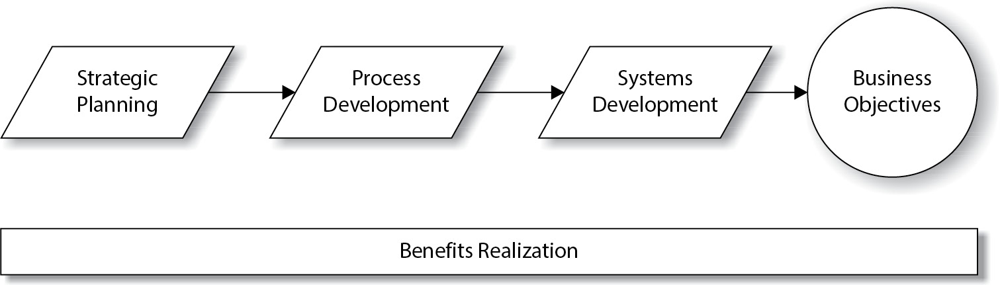
Figure 4-1 Benefits realization
Portfolio and Program Management
A program is an organization of many large, complex activities and can be thought of as a set of projects that work to fulfill one or more key business objectives or goals. A program is generally a multiyear effort that comprises many complex projects, each with its own project manager, project schedule, budget, and participants.
A program is usually run by a program manager who has oversight over all of the projects in the program. Figure 4-2 shows the relationship between a program manager and the projects that he or she manages.
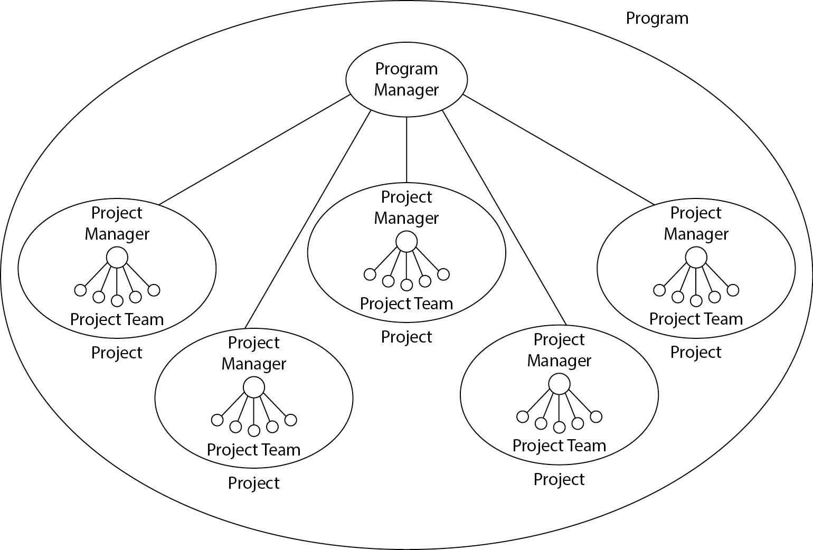
Figure 4-2 A program manager oversees several projects.
Like a single project, a program has a defined scope, budget, resources, and a schedule. A program also helps to organize and coordinate the operation of its projects, identify dependencies between them, manage conflicts and issues, and manage common and shared resources used by project teams.
Starting a Program
When an organization sets objectives and goals that will be realized through a program, a number of activities usually take place:
• Development of a program charter A charter is a formal document that defines the objectives of a program, its main timelines, the sources of funding, the names of its principal leaders and managers, and the names of the business executive or executives who are sponsoring the program.
• Identification of available resources Senior management must identify the resources that will be used by the program. These will include funding, personnel, and business assets such as information systems and other equipment.
The charter and resources provide the direction and the means to begin a program that will move the business closer to realizing its objectives.
Running a Program
After a program has been launched, the program manager needs to manage it actively to ensure that the program is on track and fulfilling its objectives. Some of the activities required may include
• Monitoring project schedules Each of the projects running in the program will have its own schedule. The program manager will need to examine these schedules periodically to understand how each is progressing. This often requires the program manager to communicate frequently with program participants and project managers to get up-to-date statuses on project tasks.
• Managing project budgets The program manager needs to monitor and manage spending by each of the projects in the program. The program manager may need to make spending adjustments periodically to keep the overall program budget under control.
• Managing resources The program manager needs to understand how resources are being used across all the projects and to make changes as needed. Resources are scarce in most IT organizations, so this requires creativity; often, the program manager needs to find resources before those resources can be used to further program goals.
• Identifying and managing conflicts Individual projects will often encounter resource conflicts—sometimes projects will vie for the same resources, or they may require resources in use outside of the program.
• Creating program status reports for senior management As executive sponsors for the program, senior management needs to be kept informed of program status, in whatever level of detail required. Often, these status reports will describe issues and conflicts and how they are being resolved. Sometimes, however, status reports will describe unresolved conflicts that require senior management intervention in the form of resource prioritization to keep vital programs moving ahead.
These activities enable management to measure progress and to adjust resources and priorities to keep the program running smoothly.
Project Portfolio Management
The project portfolio is the organization’s entire set of active projects at any given time. Unlike a program, where projects are related and support a common objective, a portfolio of projects is simply all the active projects, which may support many different and even unrelated objectives and be part of different programs.
An organization needs to maintain a collection of information about all its projects in a central location. Having this information will help a senior manager or executive quickly view high-level information about all the active projects in the organization. Often, this information will be stored electronically in a form that will enable an executive to sort and filter company projects in various ways. Some of the information that may be maintained in this portfolio of projects includes
• Executive sponsor
• Program manager
• Project manager
• Start and end dates
• Names of participants
• Objectives or goals that the project supports
• Budget
• Resources used
• Dependencies
Business Case Development
The prevalent point of view is that IT exists in support of business objectives. Given this assumption, every IT project should directly or indirectly result in tangible business benefits, regardless of how technical or abstract any particular IT project may be.
Before any IT project is permitted to begin, a business case for the project is developed. The purpose of a business case is to explain the benefits to the business that will be realized as a result of the project.
The development of a business case will normally follow a feasibility study. A feasibility study defines the business problem and describes potential solutions. It is possible, however, that none of the solutions will result in a benefit for the business. For example, each may be too costly or may incur excessive risk. However, the business case should go beyond the feasibility study in terms of business benefits and include actual figures for costs and benefits.
A typical business case is a written document that includes
• Business problem This is a description of the business problem in qualitative and quantitative terms.
• Feasibility study results The business case should include results of the feasibility study if one was performed.
• High-level project plan This should include a timeline and the number of persons required.
• Budget This should include the cost to execute the project as well as costs associated with the solution.
• Metrics The business case should include information on how business benefit will be measured, as well as expected before-and-after measurements. Estimates should be backed up by examples of the benefits of similar projects in the organization or in other organizations.
• Risks The business case should include any risks that may occur, as well as how those risks can be mitigated. These risks may be market risks or financial risks.
The start of a project is not the only time to assess the project’s business case and decide whether to undertake the project. At key milestones throughout the project, the business case should be reevaluated. As a project unfolds, often situations develop that could not be anticipated earlier, and these situations sometimes result in added risks, costs, or other changes. For this reason, the business case should be reconsidered throughout the project so that senior management can determine whether the project should continue or not.
Measuring Business Benefits
In the mid-to-late 20th century, information technology was primarily used to automate tasks, and in that era it was fairly easy to measure the benefits derived from IT. Often, measuring the benefits was a matter of comparing the cost and time spent to perform tasks manually versus the cost and time spent to automate those tasks. Information technology’s role today is digital transformation (sometimes abbreviated as DX ), which provides benefits that are not so easily measured and are often not short-term in nature.
For example, an organization that invests in a new customer relationship management (CRM) application may do so to improve its customer service in measurable ways. Shortly after implementing a CRM system, productivity may actually decrease until individuals and teams learn how to operate and fully utilize the new system. But customer satisfaction may improve in future quarters. A year or more may be required to determine whether improvements in customer satisfaction is a blip or an actual upward trend attributable to the new CRM. The new system can also help the organization to improve its products and services; the benefits from these improvements may not be experienced for years after implementation of the new CRM.
Measuring business benefits requires that the organization select key performance indicators (KPIs) and measure them formally and accurately over the long term. When new projects and programs are considered, business benefits should be estimated and measurements should be taken before and after the project has completed to validate whether the project’s predictions were valid. The nature of the project may require months or even years of measurements to validate project results.
Business case development should include a description of the business benefits that are expected from the completed project, including how those benefits will be measured. These key metrics should be decided before the project begins. If key metrics are not being measured, those measurements should begin as soon as possible so that the organization will have enough “before-and-after” metrics to determine whether the project has benefited the organization or not.
In the spirit of continuous improvement, careful analysis of key metrics long after a project has been completed should lead the organization to consider additional improvements in its processes and technologies.
Finally, organizations that modernize business processes with automation often enjoy unexpected benefits, including insight gained through business analytics or business intelligence (BI), such as customer buying trends that could not have been known before.
Project Management
The preceding section on benefits realization is concerned with the high-level view across many projects. This section on project management takes a closer look at the management of individual projects.
A project is a coordinated and managed sequence of tasks that results in the realization of an objective or goal. The effort may be performed by a single individual or by many. A project’s duration may be a few days or as long as two years or more.
Organizing Projects
Projects should be organized in a methodical way that supports the organization’s objectives. Management should formally approve projects, which should be documented in a consistent manner.
In addition to being a collection of organized activities, a project has a social context and culture. A project consists of a project team that comprises the people who perform tasks for the project. The relationships among these people fall into four models:
• Direct report A department manager serves as the project manager. Project team members report directly to the manager and are obliged to carry out the directives from the manager. In a slight variation, the department manager could be a project team member, and the project manager is someone who reports to the department manager.
• Influencer The project manager has no direct management influence over project team members. The project manager must practice the art of influence and persuasion over the project team members to keep the project moving.
• Pure project The project manager is given authority over the project team members, even though the team members do not report to the project manager.
• Matrix The project manager and project team manager have authority over each project team member.
Initiating a Project
The formal project launch occurs when the project has been approved by the IT steering committee or a similar oversight body. Management will appoint a project manager as well as all project team members.
Management also needs to establish priorities for the team and for each team member. Because most or all project team members will probably have other work responsibilities, management must be very clear on where project activities fall on the work priority list.
In addition, management must express its support for the project schedule and important project milestones so that all project team members are aware of management’s objectives for timely project completion. This will help to motivate project team members to start and complete tasks on time.
Prior to the launch of a project, management should also discuss the upcoming project with individuals to learn their opinions regarding the makeup of the project team and its prospects for success.
Developing Project Objectives
The specific objectives of a project must be established and documented before the project begins. In fact, project objectives should be a part of the project’s description when the project is being considered for approval by the IT steering committee. Project objectives should be specific, measurable, achievable, relevant, and time-bound (SMART). They should support and relate to business objectives and to the organization’s key performance indicators.
Example project objectives are
• Reduce customer service call wait time by 70 percent.
• Reduce implementation time for new customers by five days.
• Reduce annual data storage system cost by 20 percent.
Additional objectives that are not a project’s key objectives may also be developed; these objectives may clarify a project’s purpose or the manner in which it will be performed.
Object Breakdown Structure
As a part of the project objectives, a project manager may develop an object breakdown structure (OBS), which represents the components of the project in graphical or tabular form. An OBS can help management and project team members better visualize the scope and objectives of the project. An example OBS appears in Figure 4-3.

Figure 4-3 An object breakdown structure helps participants understand project scope and objectives.
An OBS is a visual or structural representation of the system, software, or application, in a hierarchical form, from high level to fine detail. An OBS is not a schematic, architecture, or data flow diagram, although one or more of these may also need to be developed, either as a part of the design or as a tool to help project participants better understand the overall system.
Work Breakdown Structure
Another common method for depicting a project is the work breakdown structure (WBS). This is a logical representation of the high-level and detailed tasks that must be performed to complete the project. A WBS used for this purpose can also be used as the basis for the creation of the project schedule. An example WBS is shown in Figure 4-4.
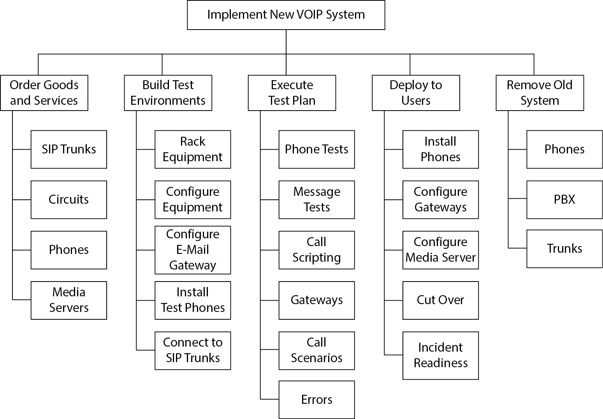
Figure 4-4 A work breakdown structure depicts a project’s tasks.
The WBS created in this phase will be simpler than the full-fledged project plan, which will include the resources required to perform each task, task dependencies, and schedules.
In simpler projects, the WBS and the project plan are one and the same. Or, put another way, the WBS can be the start of the project plan, in terms of its containing all the tasks that need to be included in the project plan. With tools like WBS Planner, the WBS is the list of tasks in the left column, and the project plan is that same list when it also contains dependencies, dates, resources, and other details. Project planning is discussed in more detail later in this section.
Managing Projects
Projects should be managed by a project manager. The project manager is responsible for performing several activities:
• Building and managing the project schedule The project manager may have developed the original project schedule, and he or she will be responsible for maintaining the schedule throughout the life of the project. As tasks are completed early, on time, or late, this will impact the rest of the project schedule, and the project manager will need to make adjustments to take into account these scheduling variations. In addition to changes in timing, other types of changes in the schedule will be required, including new tasks, new dependencies, and other unforeseen matters that could affect the schedule.
• Recording task completion As tasks progress and are completed, the project manager must keep the project schedule up to date. The project schedule must accurately reflect the status of each task.
• Running project meetings The project manager organizes regular meetings of project participants where project status and issues are discussed. The project manager facilitates project meetings to make sure that the meeting agenda is followed. The project manager is also responsible for sending meeting agendas, meeting minutes, and other updates to the project team.
• Tracking project expenditures The project manager is responsible for tracking and reporting on project costs.
• Communicating project status The project manager is responsible for communicating project status to project team members and also to management. A project status report will include details on task statuses and on whether the project is still on schedule and on budget, and a list of open and closed issues.
Project Roles and Responsibilities
Formal roles and responsibilities need to be established so that projects will be well organized and will have the greatest possible chance of success. Defined roles and responsibilities ensure that important tasks are known to all project participants. Typical roles and responsibilities include
• Senior management Support the approval of the project, its funding, and resource allocation.
• IT steering committee Commission the feasibility study, approve the project, assign IT and business resources to the project, and approve the project schedule. Periodically review project status and progress. Take corrective action when necessary—for example, when priorities conflict.
• Project manager Develop the detailed project plan, identify and indicate dependencies, and estimate the time required to complete each task. Track progress at the task level. Call regular project meetings where project status and issues are discussed among project team members. Track spending and other resource allocation. Publish status reports to project team members and to senior management.
• Project team members Participate in all project team meetings; complete tasks on time; identify issues and communicate them to the project manager; look for opportunities to optimize tasks, reduce necessary resources, and improve the project.
• End-user management Assign staff to the project team and support the development of business requirements, test cases, test data, and system testing.
• End users Develop business requirements, test cases, use cases, test data, and test systems, and report test results to the project manager. Participate in acceptance testing and provide accurate, timely results.
• Project sponsor Define project objectives, provide budget and other resources, and work with the project manager and other management stakeholders to ensure that the project delivers the desired outcomes.
• Systems development management Provide adequate hardware, software, tools, and resources to facilitate development. Assign competent, trained developers to the project, and support their participation in the project.
• Systems developers Develop software and systems that conform to functional requirements, good coding practices, and organization IT standards. Perform unit, program, and system testing as required. Ensure that software and systems are free of software bugs, vulnerabilities, and security issues that could result in undesired activities such as a break-in or disclosure of sensitive information. Develop operational procedures.
• Quality assurance Review the results and deliverables throughout the project to determine whether the project deliverables are in compliance with project requirements and any applicable regulatory requirements and other legal obligations.
• Security manager Provide security requirements, privacy requirements, regulatory requirements, audit requirements, test plans, and test cases. Ensure that the system meets organizational controls and audit requirements. Perform security testing. Report test results to the project manager.
• IT operations Provide operational requirements, review operational procedures, and participate in acceptance testing. Participate in system implementation, and operate the system after implementation. Report post-implementation problems to the project manager and developers.
• IS auditor Subsequently audit the systems and processes built or changed in the project. Act in an advisory role and as a controls expert. The auditor should not otherwise act as a decision maker on the project team.
Project Planning
The term project planning refers to the activities related to the development and management of a project. The project manager is responsible for identifying all the activities required for the project, the sequence in which they must be performed, dependencies between tasks, the resources required, and the priorities of tasks and resources. The project manager will also be expected to determine how the project can make the most efficient use of resources and the shortest amount of time in which the entire project can be completed.
Project planning encompasses many detailed activities:
• Task identification One of the first steps in the development of a project plan is identifying all the tasks that must be performed to complete the project. This is often accomplished using a project management tool that can be used to build a detailed WBS. When completed, a WBS is a structural decomposition of the work necessary to complete the entire project, task by task, bit by bit.
• Task estimation Once the project planner has identified all of the tasks required to complete the project, the next step is determining how much time and effort each task requires. There are a couple of different ways to measure this: actual effort and elapsed time. For example, it may take a painter one hour to paint a room, but there is also preparation and cleanup time to consider, and it may take four hours for the paint to dry (though while the paint is drying, the painter can be doing other tasks). Often, it is necessary to know how many hours or days of work are required for one or more persons to perform a task, but knowing elapsed time is critical also.
• Task resources It is necessary to know what resources are required to perform a task. Resources include people (and not just any people—often a given task must be performed by specific people), equipment, consumable resources, outside professional services, materials, software licenses, and so on.
• Task dependencies Often in a project there will be tasks that cannot be started until other tasks have been completed. Project managers must discern all of the dependencies between projects so that project teams don’t run into unexpected obstacles.
• Milestone tracking In larger projects, it is a good idea to identify milestones. Milestones are significant events in the project when major phases have been completed. Example milestones are completion of the design, completion of software development, completion of network wiring, and completion of software testing. Often management will want to schedule a project review meeting when these milestones have been completed; such reviews give management an opportunity to make go/no-go decisions on whether the project should be permitted to continue, or to see whether any lingering issues should first be addressed before the project is continued.
• Task tracking When a project is in progress, the project manager must accurately track the status and progress of every task. He or she also must look toward the short-term and long-term futures, anticipate future resource needs, and make sure that tasks that have not started yet will be able to start without undue delays.
Estimating and Sizing Software Projects
Several tools and methods can be used to estimate the amount of effort required to complete tasks in a software project. Tools and methodologies can make the task of estimating work more accurate, because they rely on techniques that have been proven over the long run. Also, tools and methodologies can reduce the time required to perform the estimating work.
Using the OBS The OBS can be useful to depict the system and its components visually, particularly in complex projects where the tasks, costs, and other aspects of the project are not immediately evident. Object breakdown structures are described in more detail earlier in this chapter.
Using the WBS The WBS is a great way to get to the tasks in a complex project. A project manager or planner can decompose large efforts into smaller and smaller pieces, down to the task level.
Using Source Lines of Code Sizing for software projects has traditionally relied upon source lines of code (SLOC) estimates. Experienced systems analysts could make rough estimates on the numbers of lines of code required for a given software project. Then, using results from past projects, the analyst could make an accurate estimate for the time required to develop a program based on its length. A similar measuring unit is kilo lines of code (KLOC).
SLOC and KLOC offer the advantages of being quantitative and somewhat repeatable for a given computer language such as COBOL, FORTRAN, or BASIC. However, these methods are falling out of favor because many of the languages in use today are not textual in nature.
The most direct replacement for SLOC/KLOC are methods that estimate the effort required to program a form, page, window, report, cell, widget, file, or calculation. For example, the programming effort for a web application would be tied to the number of forms, pages, and windows in a web application and the number of fields and variables in each.
An analogy between the older and newer methods for estimating source code is to estimate the time required to develop engineering drawings for an automobile. Old methods would rely on the weight (number of pounds, akin to the number of lines of code) of the car. Newer methods rely on the number of individual features (engine size, number of doors, seats, lights, accessories, and so on).
Using Constructive Cost Model The Constructive Cost Model (COCOMO) method for estimating software development projects was developed in the aerospace industry in the 1970s and represented an advancement in the ability to estimate the effort required to develop software. Three levels of COCOMO were developed: Basic COCOMO, Intermediate COCOMO, and Detailed COCOMO. Only Basic COCOMO is described here.
Basic COCOMO uses a minimal number of inputs:
• KLOC The number of lines of code (in thousands)
• Complexity rating The rating for the project, expressed as “organic” (a smaller project with experienced software engineers and less-than-rigid requirements), “semi-detached” (a larger project with a mix of rigid and semi-rigid requirements), or “embedded” (a large project with highly specific and restrictive requirements)
Equations in Basic COCOMO are
where the values a, b, c, and d are taken from Table 4-1, and
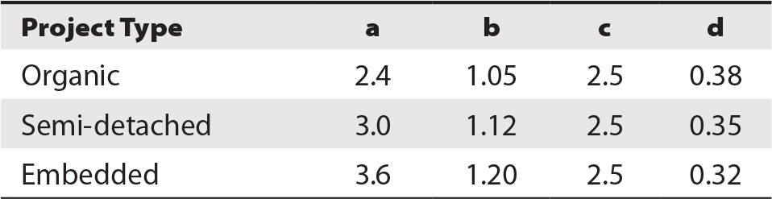
Table 4-1 COCOMO Weighting Factors
Let’s look at two examples. First, a software project has 32,000 lines of code and is classified as organic. Using the COCOMO estimating model, this effort will require 91.3 man-months, 13.9 months of elapsed time, and seven people.
In a second example, a software project requires 186,000 lines of code and is classified as embedded. Using the formulas here, this project will require 1,904 man-months, 28 months of elapsed time, and 68 people. This is a large project!
Using Function Point Analysis Function point analysis (FPA) is a time-proven estimation technique for larger software projects. Developed in the 1970s, it looks at the number of application functions and their complexity. FPA is not hindered by specific technologies or measuring techniques (such as lines of code), so it is more adaptable for today’s graphical user interface (GUI)–based software.
In FPA, the analyst studies the detailed design specifications for an application program and counts the number of user inputs, user outputs, user queries, files, and external interfaces. The analyst then selects a complexity weighting factor for each of those five points. The number of inputs, outputs, queries, files, and interfaces are multiplied by their respective complexity weights, and those products are added together. The sum is called the number of unadjusted function points (FPs) for the program.
A value adjustment factor (VAF) is then determined for the application; this factor will raise or lower the function points based upon 14 criteria that address various aspects of application complexity. The total number of unadjusted function points is multiplied by the VAF to yield the total adjusted function points.
A sample FPA calculation table appears in Table 4-2.
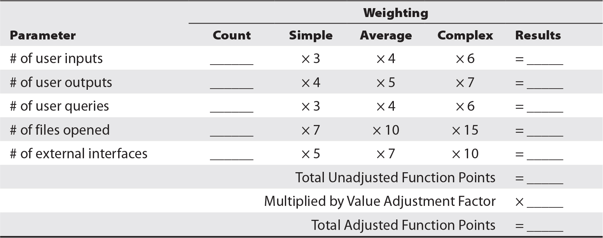
Table 4-2 Using FPA to Estimate Effort Required to Develop Complex Applications
The only disadvantage of FPA is that the value of an FP for a program does not directly specify the time required to develop it. However, an organization that has used FPA in the past will probably have a pretty good idea of the number of man-hours or man-months each FP requires.
Considering Other Costs In addition to man-months, other costs will need to be considered in a software project, including
• Development, modeling, and testing tools The project may require new tools for developers or additional licenses if there are more developers working on the project than the number of available licenses.
• Workstations Developers, testers, or users may require additional (or more powerful) workstations.
• Servers The project may require additional servers or upgrades to existing servers. Servers may be needed for production and for development and testing purposes.
• Software licenses This includes licenses for operating systems, database management systems, application software, virtual network devices, and possibly more.
• Network devices The project may require additional network devices (whether physical or virtual) such as switches, routers, or firewalls to tie everything together.
• Storage The system may require more storage than was estimated.
• Connectivity Higher capacity network connections might be required.
• Training Developers or testers may need training on the use of their tools, and users may need training regarding the use of new software.
• Equipment This could include office equipment such as copiers, and just about anything else.
• Travel Staff, trainers, consultants, suppliers, and others may need to travel to various locations throughout the project.
Additional costs associated with a project may be specific to certain industries, regulations, or locales.
Scheduling Project Tasks
When the project manager or planner has established the complete breakdown of tasks and has determined resources, dependencies, and levels of effort for each, he or she can create the actual project schedule. Tools such as Trac, Microsoft Planner, Microsoft Project, and many others will automatically assign dates to tasks once their duration, dependencies, and resources are identified.
After the planner/manager has entered all of the tasks into a project planning tool, he or she will probably discover that the end date of the project (as calculated by the tool) is long after the date that senior management has defined as the end of the project.
This is where a good project planner/manager begins to earn his or her compensation.
This is a critical phase in the project, when the project manager begins to analyze the project plan and look for ways to shorten the overall duration. Methods for optimizing project duration and squeezing the project into management-supplied constraints include
• Shorten task duration The project manager should consult with subject matter experts who provided time estimates for each task and see whether those estimates were high. A good project manager presses for details as he or she asks the expert to justify the time frames on the plan.
• Reduce dependencies The project manager can consult with subject matter experts to find ways to reduce dependencies, which can enable more tasks to run in parallel (which is okay as long as there aren’t multiple tasks stacking up on individual resources or teams).
• Identify critical paths The project manager can perform critical path analysis (discussed in more detail later in this section). This will help to point out which parts of the project may need additional scrutiny.
Gantt Chart A Gantt chart is a visual representation of a project in which individual tasks occupy rows on a worksheet and horizontal time bars depict the time required to complete each task relative to other tasks in the project. A Gantt chart can also show schedule dependencies and percent completion of each task. A sample Gantt chart is shown in Figure 4-5.
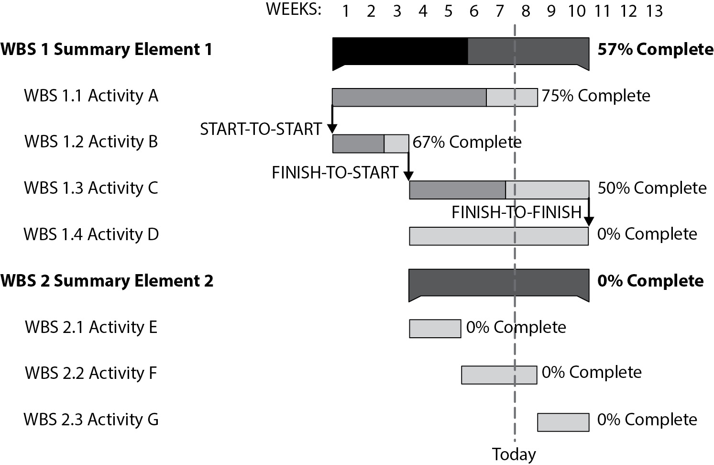
Figure 4-5 A Gantt chart illustrates task duration, schedule dependencies, and percent completion.
Program (or Project) Evaluation and Review Technique A program (or project) evaluation and review technique (which is nearly always known just as PERT) chart provides a visual representation of project tasks, timelines, and dependencies. A PERT chart shows project tasks from left to right in time sequence, with connectors signifying dependencies. An example PERT chart is shown in Figure 4-6.
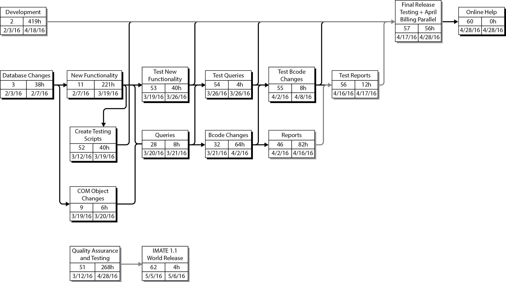
Figure 4-6 A PERT chart helps to visualize time sequence and dependencies in a project. (Image courtesy of Digital Aardvark, Inc.)
Critical Path Methodology (CPM) A PERT chart helps to illustrate how a project is a “network” of related and sequenced tasks. In this network, it is possible to draw “paths” through ordered tasks from the beginning to the end of the project.
When a PERT chart includes notation regarding the elapsed time required for each task, you can follow each path through the network and add the elapsed time to get a total time for each path.
A project’s critical path is that path through the PERT chart with the highest total elapsed time.
It is important to identify the critical path in a project, because this enables the project manager to understand which tasks are most likely to impact the project schedule and to determine when the project will finally conclude. When a project manager knows which tasks are on the critical path, he or she can perform analysis and attempt to improve the project plan through one of the following:
• Start critical tasks earlier If a critical-path task on a project can be started earlier, this will directly affect the project’s end date. To be able to start a task earlier, it may be necessary to change the way that earlier dependent tasks are performed. For example, a Unix system administrator can be brought into a project a week earlier to begin critical tasks such as building servers.
• Reduce dependencies If earlier tasks in the project can be changed, it may be possible to remove one or more dependencies that will enable critical tasks to begin (and hence, end) earlier. For example, the “Install operating system” task depends on an earlier task, “Purchase server.” If the organization has an available server in-house, the project does not need to wait to order, purchase, and receive a server. By using an in-house server, the “Install operating system” task can be started earlier.
• Apply more resources to critical tasks Some labor-intensive tasks can be completed more quickly if more resources are available to assist with them. An experienced project manager will be able to identify the types of tasks that can be shortened by adding resources. As the saying goes, however, “Nine women cannot make a baby in one month.” Experienced project managers are keenly aware of the concept behind this truth.
Peaks and valleys of resource utilization are costly and disruptive. They’re more costly especially when external resources (for example, contractors and consultants) are used, since on-again, off-again resource utilization may incur extra fees. But they can also be costly for internal resources if personnel are being shuttled back and forth between projects. Starts and stops can mean that personnel incur startup time as they move back and forth between projects.
Timebox Management For many projects, time is the primary constraint, and in such projects, the end date is non-negotiable. A timebox is a period in which a project (or a set of tasks within a project) must be completed.
Timeboxing can increase the chances that a large project can be completed within a certain time period by splitting it into several periods (each usually a few weeks long). Each timebox has its own budget, which is fixed. The deliverable for each timebox, however, can be adjusted somewhat, provided that the customer (or primary end user) agrees with any changes.
Project Records
Projects need to have written records of their proceedings, from project inception to shutdown. The purpose of these records is to help project managers and other project team members keep track of the details related to the project during its lifetime and beyond.
The types of records that most often need to be kept for a project include
• Project plans This includes initial project plans as well as the records used to track task scheduling and completion.
• Project changes Proposed and approved (as well as rejected) changes to the project schedule, deliverables, budget, and so on need to be recorded.
• Legal documents Contracts, proposals, and statements of work (SOWs) that are a part of the project should be recorded. Internal and external SLAs fit in this category also.
• Meeting agendas and minutes This includes issues, decisions, and other matters encountered and discussed from week to week.
• Resource consumption Purchase orders, invoices, and receipts for equipment, supplies, and services should be recorded. This may also include time sheets and invoices for employees, contractors, consultants, and other service providers.
• Task information Details associated with the performance and/or completion of project tasks should be recorded.
• Draft and final deliverables Any work products that are produced as a part of the project need to be retained. If there are any approvals associated with final versions of deliverables, these need to be retained as well.
Project Documentation
Virtually every IT project needs to include documentation that describes the system or application that is built or modified. Documentation helps a wide audience with many aspects of an application, including
• Users End users of applications need to understand how the systems are supposed to be used. This includes the operation of all user interfaces, the business meaning of application controls, and how to solve typical problems and issues.
• Support If end-user support is provided, these individuals need to know how to guide users through typical and not-so-typical problems and how to fix common problems.
• IT operations System operators who monitor and operate systems and applications need to know what they are supposed to do. This can include application, database, operating system, or device monitoring; problem identification and resolution; backups; system recovery; and daily or weekly tasks.
• Developers Detailed descriptions of the system will help current and future IT workers understand how the system works. Descriptions of the inner workings of individual programs, components, and tools; internal and external data flows; interfaces; and state diagrams will help developers and engineers understand a system so that they can more easily support problems and make future changes.
• Auditors IT and business auditors who audit the systems, applications, or the business process(es) supported by the system need to know how the system works. This includes business controls such as access controls and the enforcement of business rules, as well as the manner in which business information is stored and processed.
• Configuration management This includes information on the methods to be used to manage and record configuration changes in the system and in the supporting infrastructure and services.
• Security This includes information on controls within and around the system that protect it, as well as event logging and incident response procedures.
• Disaster recovery and business continuity planning If the system supports a business process that is in-scope for business continuity planning or disaster recovery planning, a complete set of documentation is required that describes system recovery and emergency operations.
• Management Company management needs to understand how systems support critical business functions, as well as information about the internal and external resources required to build and support the system.
Project Change Management
When a project is launched, company management has agreed to sponsor and allocate resources to the project based upon the objectives of the project at its onset. As a project is launched and as it progresses week by week, the project manager and team will meet regularly to discuss the schedule and any issues that arise that were unanticipated at the start of the project.
While managing the project schedule, a project manager could be tempted to adjust the end date on a task that is running late to adjust affected downstream tasks. However, doing so may affect the budget or the final project deliverable. Management might not appreciate the project manager making arbitrary changes to the project schedule without asking for permission. If management permits this degree of latitude from the project manager, it is likely that the schedule will continue to slip here and there, significantly affecting the final completion date as well as the budget and resource utilization. This type of change cannot be permitted to take place.
Issues that affect the overall project schedule, deliverables, resources, and budget need to be formally identified and submitted for approval through a formal change process. Management needs to establish parameters for changes to budget, schedule, deliverables, and resources. For example, any proposed project change that results in a change of budget or final delivery date would need to be approved by management. The procedure for making changes to the project should be done in two basic steps:
1. The project team, together with the project manager, should identify the specific issue, its impact on the project, and their proposed remedy. This information should be packaged into a formal request.
2. This change request should be presented to management, either in one of the regular project meetings or in a separate meeting that includes the project manager, any relevant project team members (experts in the specific matter to be discussed), and members of senior management—preferably those who are sponsoring the project. The proposed change and its impact on the project should be discussed, and management should make a decision on whether to approve the change.
It should be evident that not every small change needs to go through this process. A spending increase of $10 is hardly a reason to call a management review, but an increase of $50,000 done without any review may make management fuming mad. Management needs to set some parameters so that change reviews will take place only when changes exceed any set thresholds.
Smaller changes in schedule and budget can be made a part of a regular project status report that should be sent to management and project sponsors. Smaller issues of changes to budget, schedule, and resources can be highlighted so that management is aware of these less significant changes.
Project Closure
When the developed or updated application is completed, the system will be handed over to users (as applicable) and support staff. Before the project team disbands, some project closure activities need to take place:
• Project debrief Here, project team members conduct an honest assessment of the performance of the project. Every aspect of the project is considered: project management, management support, team member participation, user participation, tools and technologies, issues and how they were managed, and turnover. Lessons on what went well and what did not are included.
• Project documentation archival All of the records associated with the project are archived for future reference. This includes project plans, correspondence, meeting agendas and minutes, budgets, drawings, specifications, requirements, documentation, and practically everything else.
• Management review This is similar to the project debrief and may be the same activity or something different from the project debrief. Management provides the same kind of feedback on the performance of the project that project team members do themselves.
• Training Users, operators, support, and analysts need to be trained on the new or changed system. In some cases, this should be handled prior to project closure, particularly if users will be using the system before that time.
• Formal turnover to users, operations, and support When the project is completed, the project team formally relinquishes control of all the elements of the project. Responsibility for managing and operating the application is transferred to IT operations and support. Responsibility for using the application is transitioned to business owners and end users.
Project Management Methodologies
Planning, initiating, and managing a project is a complex undertaking, and many different types of projects are undertaken, even within an individual organization. Several project management methodologies are in use. These methodologies differ in approach, documentation, and management techniques.
Project Management Body of Knowledge (PMBOK)
The PMBOK guide is an international standard (IEEE Std 1490-2011 and ANSI/PMI 99-001-2008) that defines the essentials of project management. The PMBOK is process-based; processes are described as follows:
• Inputs (documentation, plans, designs, and so on)
• Tools and techniques (mechanisms applied to inputs)
• Outputs (documentation, products, or services)
In the PMBOK model, processes in most projects are arranged in five process groups and ten knowledge areas. The process groups for running a project are
1. Initiating
2. Planning
3. Executing
4. Controlling and Monitoring
5. Closing
The knowledge areas in a project are
1. Project Integration Management
2. Project Scope Management
3. Project Time Management
4. Project Cost Management
5. Project Quality Management
6. Project Human Resource Management
7. Project Communications Management
8. Project Risk Management
9. Project Procurement Management
10. Project Stakeholders Management
The process groups and knowledge areas form a matrix, wherein every process within project management falls into one knowledge area and one group.
Projects in Controlled Environments
The PRojects IN Controlled Environments (PRINCE2) is a project management framework that was developed by the U.K. Office of Government Commerce and is now managed by AXELOS. Like PMBOK, PRINCE2 is a process-driven framework. The elements of the framework are organized into seven top-level processes:
1. Starting Up a Project (SU)
2. Directing a Project (DP)
3. Initiating a Project (IP)
4. Controlling a Stage (CS)
5. Managing Product Delivery (MP)
6. Managing Stage Boundaries (SB)
7. Closing a Project (CP)
Each of these processes has its own structure and additional detail that describe steps and required activities. The PRINCE2 method that integrates principles, themes, and processes is depicted in Figure 4-7.
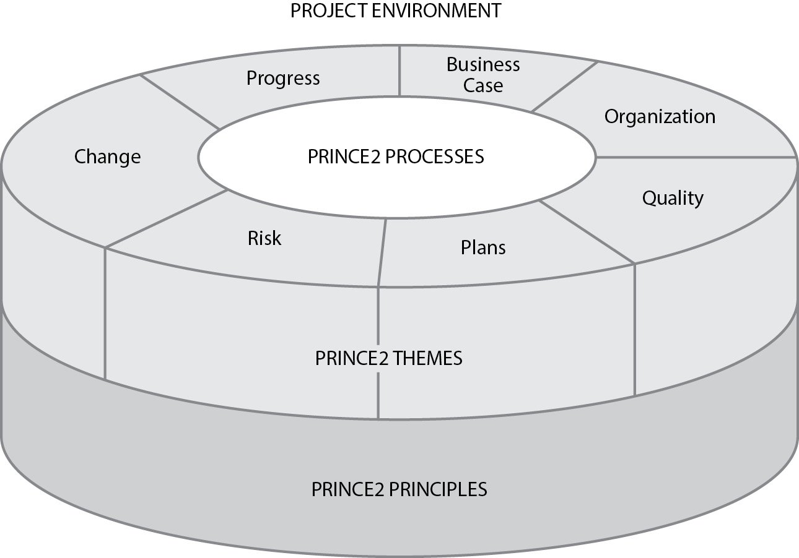
Figure 4-7 The PRINCE2 method integrates principles, themes, and processes. (Image courtesy of AXELOS Limited)
Scrum
Scrum is an iterative and incremental process most commonly used to manage an agile software development effort. Scrum defines several roles:
• ScrumMaster The project manager or team leader
• Product owner The customer or the customer’s representative who speaks for the customer
• Team The project team members who do the actual project work
• Users The people who will be using the software once it has been developed or updated
• Stakeholders Other parties who contribute in some way to the project, such as customers, vendors, and suppliers
• Managers The individuals who provide resources to the project
These roles belong to two major groups: stakeholders and employees. The stakeholders are the ScrumMaster, product owner, and team members. The employees are everyone else on the team; though they are interested in the outcome of the project, their jobs are probably not on the line.
A typical Scrum team is just five to nine members. Larger projects are organized into a Scrum of Scrums that scales upward to include hundreds of programmers.
A typical Scrum project consists of a sprint, a focused effort to produce some portion of the total project deliverable. A sprint usually lasts from two to four weeks.
The project team meets every day in a meeting called the daily standup (or the Daily Scrum) that lasts no more than 15 minutes. It is called a standup because participants usually stand (it helps the meeting go faster). The ScrumMaster leads the meeting and asks three questions of each team member:
1. What have you done since yesterday?
2. What are you planning to do by tomorrow?
3. What obstacles are preventing you from completing your work?
Although employees are welcome to join the daily standup, only stakeholders are permitted to speak.
At the end of each sprint, a sprint retrospective is held, a meeting that is a reflection of the just-completed sprint. A retrospective is usually limited to four hours.
The documents that are created and maintained in a Scrum project are
• Product backlog This list of required features describes deliverables for the entire project (not just the current sprint).
• Sprint backlog This detailed document describes how the project team will implement requirements for the current sprint.
• Burn down chart This document shows the number of remaining tasks for the current sprint or the count of items on the sprint backlog.
The Scrum process is illustrated in Figure 4-8.
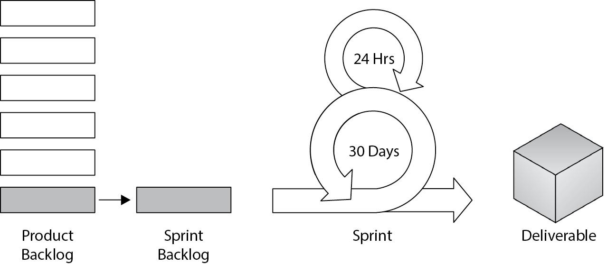
Figure 4-8 The Scrum process consists of one or more sprints that produce project deliverables every two to four weeks.
Lean
You should think of lean more as an approach than as a process like waterfall or Scrum. Lean focuses on efficiency; it starts by identifying value and then achieves it through the mindset of continuous improvement and elimination of waste.
Lean was derived from the lean manufacturing methodology that originated in the Japanese manufacture of Toyota automobiles, which focused on the elimination of waste without sacrificing value.
The principles of lean are
• Eliminate waste.
• Amplify learning.
• Decide as late as possible.
• Deliver as fast as possible.
• Empower the team.
• Build integrity in.
• Optimize the whole.
Agile
Like lean, agile is more of an approach than a methodology or a process. The agile manifesto describes four principles:
• Individuals and interactions over processes and tools
• Working software over comprehensive documentation
• Customer collaboration over contract negotiation
• Responding to change over following a plan
Agile is mainly known as an iterative technique used to move a project toward success. Pundits would call agile a development process without a master plan, but with iterative plans instead. Like an artist rendering a painting, the artist adds basic shapes and hues, continually adding detail and touching up until the piece is finished.
Kanban
Also derived from the lean Toyota Production System manufacturing model, the root of Kanban is the visual Kanban board that shows the overall flow and progress of a project. Figure 4-9 shows an example Kanban board. Arguably, the greatest strength of Kanban is its visual display of planned tasks, work in progress, and completed tasks. While managing a project, a project manager will pull forward specific tasks as resources are available to complete them.
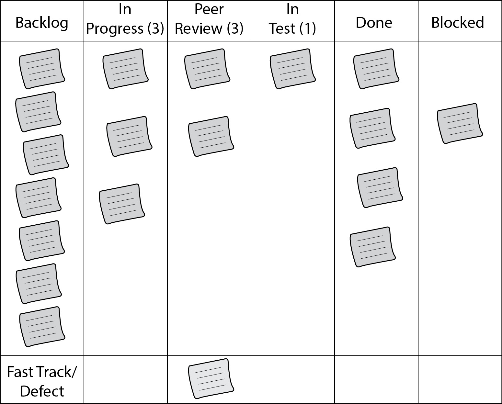
Figure 4-9 Example Kanban board (Image source: Dr. Ian Mitchell)
Scrumban
As the name suggests, Scrumban is a combination of Scrum and Kanban methodologies. Scrumban has the structure of Scrum with the flexibility of Kanban. Scrumban is suitable for Kanban-oriented teams that need more structure, or for Scrum teams that need more flexibility.
Extreme Programming
Extreme programming (XP) is an iterative development methodology used primarily in software development projects. Extreme programming has a set of values that are similar to Scrum:
• Simplicity
• Communication
• Feedback
• Respect
• Courage
Figure 4-10 depicts an XP workflow. More information on XP is available at www.extremeprogramming.org.
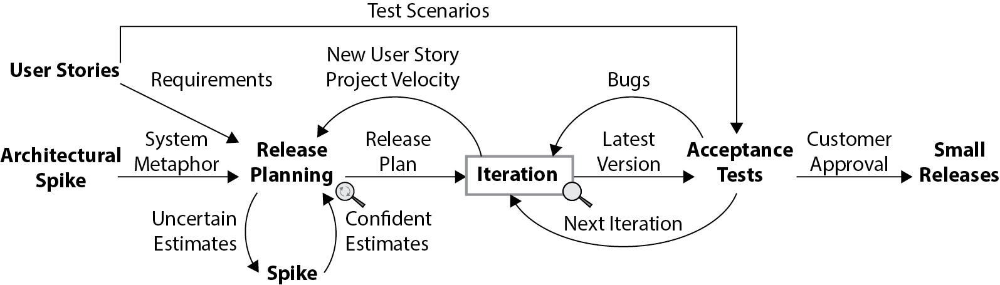
Figure 4-10 Extreme Programming process flow (Image courtesy of Don Wells)
The Systems Development Life Cycle (SDLC)
Developing and maintaining information systems is a complex undertaking that requires a great deal of structure, organization, and discipline. Application software and other systems are used to automate or support key business processes. Organizations rely heavily on applications to be operating properly, on demand, and with sufficient capacity.
Designing, developing, and using information systems requires a diverse array of skills that are typically held by people located throughout an organization. These diverse skills are applied by persons with different levels and styles of education, and in the workplace, these different groups of people are sometimes suspicious of one another and believe that the others do not really understand “the way things ought to be.” This is a part of the human dynamic that affects the performance of project teams and influences the outcome of larger development projects.
System development projects are expensive. Given the cost of developers, project managers, software tools, and computer hardware, even a “small” project can easily cost many tens of thousands of dollars, and large projects can cost several million.
Management wants the project to finish on time and on budget, and users want the software to operate as promised. Shareholders want the entire development process to be efficient and effective.

EXAM TIP The CISA exam may include multiple questions related to the SDLC or its business process equivalent, the Business Process Life Cycle (BPLC), covered later in this chapter. Familiarity with the phases of the SDLC is key to your success with these questions.
These factors are among those that demand that the software development process be highly organized and structured so that all activities are performed according to a plan. The SDLC is a framework for deciding what software should do, building it accordingly, performing testing to verify features, placing it in production, providing support, and maintaining it after initial implementation.
SDLC Phases
The systems development life cycle describes the end-to-end process for developing and maintaining software. A common structure for SDLC is a waterfall-style framework that consists of several distinct phases:
1. Feasibility study
2. Requirements definition
3. Design
4. Development
5. Testing
6. Implementation
7. Post-implementation
Organizations often employ a “gate process” approach to their SDLC by requiring that a formal review be held at the conclusion of each phase before the next phase is permitted to begin. The review is usually a formal meeting where project managers and other participants describe the status of the project; management, if satisfied that the current phase of the project has been completed successfully and that all requirements have been met, will permit the project to proceed to the next phase.
In addition to the waterfall SDLC model, iterative and spiral models are used in SDLC processes. The iterative and spiral models both operate in (visually) circular modes, as opposed to the linear waterfall model.
The spiral model consists of the development of requirements, design, and one or more prototypes, followed by additional requirements and design phases until the entire design is complete. Similarly, the development in the iterative model goes through one or more loops of planning, requirements, design, coding, and testing until development and implementation are considered complete.
The DevOps model is also often used for systems development processes. DevOps is an iterative development and operations model that is discussed later in this chapter.
SDLC in this section is described from the waterfall model’s perspective. The activities discussed in this section in the waterfall model are quite similar to those in the iterative and spiral models.
Pre-SDLC: Software and Business Capabilities Imagined
The first phase of the SDLC is the feasibility study. But how does the feasibility study get started? It does not create itself; instead, the feasibility study is started as a result of some pre-SDLC event.
An instantiation of the SDLC is created when management has decided that some new software application is needed or some significant changes are needed in an existing application. By “instantiation” I mean that management has decided to initiate the process to develop or update a software application. Management makes such a decision as a response to an event, which could be any of the following:
• Changes in market conditions For example, the entrance of a new competitor or the development of a new product or service feature by a competitor may spur management to respond by matching the competitor’s capabilities. A competitor can also create a new market through innovation in products or services; this kind of a move sometimes needs to be answered by making a change to maintain parity with the competitor. Or your organization may be the one that creates a new market through some groundbreaking innovation in the way that it does business or in what it delivers to its customers.
• Changes in costs or expenses Dramatic shifts in capital or expense costs may force an organization to make changes. For instance, higher fuel costs may prompt the organization to reduce field service calls, but doing so might require better remote diagnostic and self-healing capabilities. In the 1990s, the shift to software development outsourcing required transformations in development methodologies that prompted organizations to make or buy better defect-management applications. And dropping telecommunications costs and higher bandwidth meant that online service providers began to ratchet up their offerings, most of which required enhancements to existing online service applications, and sometimes brand-new ones.
• Changes in regulation The rise in dependence on technology has resulted in some negative events, which in turn resulted in new legislation or changes in existing legislation. Examples of relatively recent and updated regulation include Sarbanes-Oxley; GLBA (Gramm Leach Bliley Act); HIPAA (Health Insurance Portability and Accountability Act); FERC/NERC (regulations from the Federal Energy Regulatory Commission and the North American Electric Reliability Corporation); USA PATRIOT Act (Uniting and Strengthening America by Providing Appropriate Tools Required to Intercept and Obstruct Terrorism Act of 2001), which has been updated by the USA Freedom Act; European General Data Protection Regulation (GDPR), PCI DSS (Payment Card Industry Data Security Standard); and many others. Many of these regulations require organizations to implement additional safeguards, controls, and recordkeeping to information systems. Sometimes this results in an organization opting to discontinue use of an older information system in favor of making or buying a newer application that can more effectively comply with applicable laws.
• Changes in risk New types of vulnerabilities are discovered with regularity, and new threats are developed in response to vulnerabilities as well as changes in economic conditions and organizational business models. In other words, hackers find new ways to try and attack systems for profit within the growing cyber-criminal enterprises of the world. Applications that were considered safe just a few years ago are now known to be too vulnerable to operate. Reducing risk sometimes means making changes to application logic, and sometimes it requires that an application be discontinued altogether.
• Changes to business processes Many types of changes to business processes will require organizations to alter their business applications so that they continue to support those processes. For example, a change in the way that purchase orders are requested and approved may require changes to the financial accounting application.
• Changes to legal agreements Changes in the legal agreements between organizations can compel an organization to make changes to its software applications. There are several possible reasons for this, including changes in risks or regulations imposed upon customer or partner organizations.
• Changes in customer requirements Changes like those just discussed will often prompt customer organizations to ask for new features or for changes in existing features in the products and services they buy. Often this requires changes in processes and applications to meet these customers’ needs.
It is important to understand that innovation is also a valid and frequent reason that an organization chooses to make changes to a software application. Generally, this means that an organization has developed new features or methods in a software application in an attempt to gain a competitive advantage.
Feasibility Study
The feasibility study is the first formal phase in the SDLC. The feasibility study is an intellectual effort that seeks to determine whether a specific change or set of changes in business processes and underlying applications is practical to undertake.
Capital and money are the fuel and lubricant for an organization. Often the purpose of a feasibility study is not to answer the question, “Can a specific type of change be made to the business?” but rather, “Is a specific type of change to the business feasible from a cost and benefit perspective?” In other words, the feasibility study is an analysis of proposed changes to business processes and supporting applications, including the costs associated with making those changes and the benefits that are expected as a result of those changes. While there is often a qualitative aspect in the feasibility study, there is almost always a quantitative aspect that states, “These specific changes will cost XXX to build, YYY to maintain, and are anticipated to make a ZZZ impact on revenue.”
Organizations don’t always make changes to business processes to increase revenue or reduce costs. However, revenue and costs are nearly always the quantitative elements that receive attention. For example, if an organization is enacting changes to processes and systems to remain compliant with regulations, management is still going to be interested in the cost and revenue impact that the changes will bring about.
A feasibility study often will propose two or more approaches to a particular challenge. For instance, if a project has been initiated as a result of changes in market conditions, the purpose of the feasibility study may be to explore various ways to respond to those market conditions; for each way to respond, there may be two, three, or more ways to implement the change by using a variety of technologies or approaches. For example, when a ride-sharing service seeks ways of expanding its markets, it considers developing additional services such as the delivery of restaurant meals, flowers, and other goods.
The feasibility study should also include the following considerations:
• Time required to develop or acquire software (or to make changes) and whether the solution can be developed or acquired within that time frame
• A comparison between the cost of developing the application versus buying one
• Whether an existing system can meet the business need
• Whether the application supports strategic business objectives
• Whether a solution can be developed (or acquired) that is compatible with other IT systems
• The cost of building interfaces between the new system and other existing systems
• The impact of the proposed changes to the business regarding regulatory compliance
• Whether future requirements can be met by the system
• Whether an innovative change will result in an increase in market share
A feasibility study should seek to uncover every reasonable issue and risk that will be associated with the new system. The study should have the appearance and form of impartiality and should not reflect the biases and preferences of those who are taking part in the feasibility study or its outcome.
A feasibility study may also include or reference a formal business plan for the proposed new activity. A business plan is a formal document that describes the new business activity, its contribution and impact to the organization, resources required to operate the activity, benefits from operating the activity, and risks associated with the activity.
Requirements Definition
Requirements describe necessary characteristics of a new application or of changes being made to an existing application. They describe how the application should work as well as the technologies that it should support. The types of requirements used in software projects are
• Business functional requirements
• Technical requirements and standards
• Security and regulatory requirements
• Disaster recovery and business continuity requirements
• Privacy requirements
These types of requirements are described in detail in the remainder of this section.
Business Functional Requirements Nearly every software project will include functional requirements. These are statements that describe required characteristics that the software must have to support business needs. This includes both the way that the software accepts, processes, and produces information, and how users interact with the software in terms of technology, appearance, and user interface function.
Functional requirements should be a part of new software acquisitions as well as modifications or updates to software.
Example functional requirements resemble the following:
• Application supports payroll tax calculations for U.S. federal, states, counties, and cities
• Application supports payment by credit card, electronic check, and virtual currency
• Application encrypts credit card numbers, social insurance numbers, and driver’s license numbers in storage and when transmitted
Notice that the preceding examples do not specify how the application is to accomplish these things. Business requirements are interested in what the application does; the application architect or designer will determine how the application will support those requirements.
In a few circumstances, new business requirements are not needed for a software modification. For example, if a software interface is being upgraded, an existing software program may need to be modified to work with the new interface. A change like this should be transparent to users, and the software should not differ in the way that it supports existing business requirements. So, in a way, it can be argued that business requirements apply even in this case: the program will still be required to adhere to existing business functional requirements.
Technical Requirements and Standards To help the organization remain efficient, any new application or system should use the same basic technologies that are already in use (or that are planned on being used in the long term). The details related to maintaining the consistency that is required constitute the majority of technical requirements and standards.
An organization of any appreciable size should have formal technical standards in place. These standards are policy statements that cite the technologies, protocols, vendors, and services that make up the organization’s core IT infrastructure. The purpose of standards is to increase technological consistency throughout the entire IT infrastructure, which helps to simplify the environment and reduce costs. Standards should include the following:
• Server hardware, virtualization platform, virtual machine, operating system, and operating system configuration
• Server tools and services
• Application programming interfaces (APIs)
• Database and storage management systems
• Network architecture, communications protocols, and services
• Authentication and authorization models and protocols
• Security architecture, hardening, configuration, and algorithms
• Software development methodologies, tools, languages, and processes
• User applications and tools
• Any other standards that describe methodologies, technologies, or practices
When an organization is considering the acquisition of a new system, the requirements for the new system should include the organization’s IT and security standards. This will help the organization select a system that will have the lowest possible impact on capital and operational costs over the lifetime of the system.
Besides IT standards, many additional technical requirements will define the desired new system. These requirements will describe several characteristics of the system, including
• How the system will accept, process, and output data
• Specific data layouts for interfaces to other systems
• Support of specific modules or tools that will supplement or support application functions (for example, the type of tax table that will be used in an invoicing or payroll system)
• Language support
• Specific middleware support
• Client platform support
Security and Regulatory Requirements Security and regulatory requirements must be developed to ensure that the new application will contain appropriate controls and characteristics that will protect sensitive information and comply with applicable regulations.
Security and regulation are sometimes strange bedfellows, and sometimes they are symbiotic. It is often better to split security and regulatory requirements into two separate sections. However, security and regulation are often mashed together, since the majority of recent applicable regulations seem to be security-related.
Organizations should have an existing security requirements document that can be readily applied to any systems development or acquisition project. These requirements should describe the business and technical controls that address several security topics, including the following:
• Authentication This broad category includes many specific requirements related to the manner in which application users authenticate onto the system. For systems that perform autonomous authentication, this will include all of the password quality requirements (minimum length, expiration, complexity, and so on), account lockout settings, password reset procedures, user account provisioning, and user ID standards. Authentication standards may also include requirements for machine and system accounts in support of automated functions in the application. For applications that use a network-based authentication service such as LDAP (Lightweight Directory Access Protocol), Kerberos, or a single-sign-on (SSO) solution, security requirements should describe how the application must interface with a network authentication service.
• Authorization This category includes requirements related to the manner in which different users are granted access to different functions and data in the application. Authorization requirements may include the way in which roles are established, maintained, and audited. An organization may require that the application support a number of roles, which are templates that contain authorization details that can be applied to a user account.
• Access control This category has to do with how the application is configured to permit access to users and/or roles. Unlike authorization, which is about assigning roles to users, access control is concerned with assigning access permissions to objects such as application functions and data. Depending upon the way in which an application is designed, permissions assignment may be user-centric, object-centric, or both.
• Encryption Really another form of access control, encryption is used to hide data that, for whatever reason, may exist in “plain sight” in some contexts and yet must still be protected from those who do not have authorization to access it. Encryption standards fall into two broad categories: (1) data requiring encryption in certain settings and contexts, and with certain encryption algorithms and key lengths; and (2) key management to be handled in specific ways that permit the application to be operated similarly to other applications in the IT environment.
• Data validation Applications should not blindly trust all input data to be properly formed and formatted. Instead, an application should perform validation checks against input data, whether a user types in input data on an application input form or the application receives the data via a batch feed from a trusted source. Data validation includes not only input data, but also the results of intermediate calculations and output data. Requirements should also specify what the application should do when it encounters data that fails a validation check.
• Audit logging This is the characteristic whereby the application creates an electronic record of events. These events include changing application configuration settings, adding and deleting users, changing user roles and permissions, resetting user login credentials, changing access control settings, and, of course, the actions and transactions that the application is designed to handle. Requirements about audit logging will be concerned with the configuration that is used to control the types of events that are written to an audit log, as well as the controls used to protect the audit log from tampering (which, if permitted, could enable someone to “erase their tracks”).
• Security operational requirements Management of passwords, encryption keys, event logs, patching, and other activities is required to maintain an application’s confidentiality, integrity, and availability.
• Misuse and abuse requirements This category needs to include the full range of use (and misuse) cases through which a user may—deliberately or not—misuse or abuse the application. This includes malicious input and other methods that may cause the application to malfunction, resulting in an escalation of privilege, exposure of—or tampering with—sensitive data, and exhaustion of system resources. The list of requirements should not merely match the capabilities of any automated or manual testing tools used by the organization.
Disaster Recovery and Business Continuity Requirements Applications that do—or may in the future—support critical business functions included in an organization’s disaster recovery plans need to have certain characteristics. Depending upon specific recovery targets specified for the business process supported by the application, these requirements may include the ability for the application to run in the public cloud, on a server cluster, on a virtual machine, or in a load-balanced mode; to support data replication; to facilitate rapid recovery from backup tape or database redo logs; or to be installed on a cold recovery server without complicated, expensive, or time-consuming software licensing issues. Requirements could also dictate the ability for the application to be easily recovered from a server or virtual machine image on a storage area network (SAN), to operate correctly in a virtual server environment, and to operate correctly in a cloud environment such as AWS or Azure. An application might also be expected to work with a different brand or version of the database management system or to coexist with other applications, even though it may usually be configured to run on a server by itself.
Privacy Requirements In the broadest sense, privacy is about two distinctly different issues. First, privacy has to do with the protection of personally sensitive information so that it cannot be accessed by unauthorized parties. This aspect of privacy neatly falls into the umbrella of security: security requirements can be developed that require access controls or encryption of personal information.
The other aspect of privacy is the prevention of proliferation and misuse of personally sensitive information. This has a lot less to do with security and more to do with how the organization treats and uses sensitive information and whether it permits this information to be passed on to other organizations for their own purposes. In this regard, privacy is about business functionality that is specifically related to how the application handles personal information.
For example, if an application includes canned reports about customers, and those reports are sent to third parties, those reports should be configurable so that they can contain (or omit) certain fields. For instance, customers’ date of birth may be omitted from a report that is sent to a third-party organization to reduce the possibility of the third party using or abusing information to the detriment of individual customers. The rule in this case is this: “You can’t abuse or misuse information you do not possess or cannot access.” Indeed, regulations such as the European GDPR require that organizations collect sensitive data only as required to perform services, and that they retain the data for only as long as it is needed.
Increasingly, privacy is addressed by regulation, so an organization may choose to classify privacy requirements in a privacy section or in a regulations section.
Organizing and Reviewing Requirements In a software project in which many individuals are contributing requirements, the project manager or another person should track each requirement back to a specific individual so that person can justify or explain those requirements if needed.
When all requirements have been collected and categorized, the project manager should check with each contributor to make sure that each requirement is actually a requirement and not merely a “nice-to-have” feature. Perhaps each requirement can be weighted or ranked in order of importance. This will help, especially in a request for proposals (RFP) situation, where analysts need to evaluate suppliers’ conformance to individual requirements. This helps project personnel determine which vendors are best able to meet the requirements that matter most.
The RFP Process The vast majority of mainstream business functions, such as accounting, customer relationship management, incident management, sales force management, and enterprise resource planning, can be handled exceedingly well using cloud-based Software-as-a-Service (SaaS) and common off-the-shelf (COTS) software. Advances in SaaS and COTS software have resulted in most IT organizations needing to develop only custom interfaces between SaaS or COTS applications and specialized programs that cannot be readily obtained. Thus, the SDLC process can be morphed somewhat to accommodate the fact that most big software projects are a matter of leasing or buying, not making. The result is the ever popular RFP activity used to communicate requirements and solicit proposals from vendors. Typical steps in the RFP process are
• Research Personnel in the organization may need to learn more about available applications and solutions so that they can develop better requirements that will more closely align with business needs.
• Requirements This trend makes the development of good requirements much more important, because the matching of different vendors’ software products with business and technical requirements depends mostly on requirements. The software that is obtained is configurable only to a point, and it probably will not be able to perform other functions so easily. In an environment where a business analyst or project manager realizes that some requirements were omitted, if the organization wrote its own software, then it might be fairly easy to change the application. If, on the other hand, some important requirements were omitted and a product selection was made in the absence of those requirements, the organization may have to live without the functionality related to those requirements. It’s kind of like specifying a four-passenger automobile because you forgot about that fifth family member; now that you’ve got the car, it’s more difficult to make a change.
• Vendor financial stability When an organization is considering purchasing or licensing software from a software vendor, the organization should examine the financial stability of the vendor. This is done as a way of determining whether the vendor is likely to be in business in the future. If the vendor’s financial fundamentals are unhealthy, then purchasing software from this vendor is a risky proposition, since the vendor may not be in business in the future. This would probably require the organization to change its software in another expensive application migration that could have been avoided.
• Product roadmap Although the software vendor may be healthy, it’s also important to understand the vendor’s long-term vision for its product. This includes not only business functionality but also the technical platforms that will be supported in the future. In this regard, it is also useful to know whether any of the vendors being considered can be deemed to be market leaders or market followers. If the organization shopping for software is likewise a market leader, it may make more sense to select a market-leading company that will be able to keep up with the organization’s own vision and market leadership.
• Experience It’s important to understand how much experience a prospective vendor has. A suitable vendor should have many years of experience developing software for the solution that the organization is trying to solve. This will help to clarify whether the vendor has been in the business of developing this particular type of software for a long time or has only recently entered the market. Deep experience will give confidence that the vendor has experience helping its customers solve the types of business problems that its software is designed to solve, whereas a company with little experience will probably have more difficulty helping its customers solve even simpler business problems, not to mention unusual or complex problems. You do not want to be in the position of calling the software vendor to ask, “Hi, we have a new kind of problem that we need to solve,” only to receive the answer, “Well, we won’t be able to be of much help because we’re new at this ourselves.”
• Vision Even for a software product as mundane as one for accounting, it is important to know each vendor’s vision for how it aims to innovate and to approach business problems in the future. If a vendor’s vision varies widely from your organization’s vision, perhaps that particular vendor is not the best choice. Although difference in vision should rarely disqualify a vendor entirely, it should be just one more variable to consider in the long equation of vendor selection.
• Multitenant data protection and data segregation For SaaS applications, it is important for those service providers to enact strict controls so that users in one customer organization are not able to access other customers’ data, even in cases of software defects and intrusions.
• References When an organization is considering leasing or purchasing software from an outside vendor, it is wise to discuss the vendor and its services with at least two or three reference customers. I suggest that a standard questionnaire be developed before any vendor contacts are made. A questionnaire will help the project manager or business analyst to collect the same information from each reference customer. This will help the organization more easily compare reference information that has been collected from several reference clients. Questions asked of reference clients fall into several areas:
• Satisfaction with implementation If the software vendor will be helping with software implementation, ask reference clients about the quality of this effort. Find out what kinds of specific issues came up and how the vendor managed them.
• Satisfaction with migration If the software vendor is going to be assisting with migrating business functionality to the new software application, ask each reference client about the quality of this effort. Whether it went well or not so well, get the names of specific personnel so that your organization can (if feasible) ask that certain vendor staff be there to support migration.
• Satisfaction with support Find out from each reference client whether they are satisfied with each vendor’s support organization. See if the support organization provides timely, high-quality, and consistently good service.
• Satisfaction with long-term roadmap Ask the reference client if they are satisfied with each vendor’s long-term product roadmap. Ask what strengths and weaknesses are in the roadmap.
• What went well Find out each vendor’s strengths and try to determine if those strengths are associated with individual vendor employees or with the vendor overall. Ask if the reference client would choose the vendor again and why (or why not).
• What did not go so well Ask the reference client what parts of their software project did not go so well. Find out if the reference client believes their experience to be associated with one specific vendor employee or the entire company as a whole.
• Other questions Finally, ask each vendor’s reference client if they have any other useful information that has not been discussed. Sometimes you’ll find out about a completely different set of activities that were associated with the vendor’s migration.
• Evaluation When you have received RFP responses from each vendor, you can begin to chart the responses in a multicolumn spreadsheet, with each vendor’s responses in a separate column. You can even score each response with a Low-Medium-High rating, and use that to see how the vendors rank in terms of requirements and references. If you can reduce the field of potential vendors to the top two or three vendors, you may choose to evaluate their products in your IT environment for a time. This means installing the software in your organization to try out with some users. The evaluation should be highly scripted—not to “win” or “lose,” but to verify systematically that the software performs as claimed and that the vendor’s responses to your functional requirements are credible. If the software operates differently from their claims in the RFP responses, it’s time either to ask hard questions or to disqualify the vendor for stretching the truth and move on.
• Vendor support Success with a given vendor’s software product can rest on vendor support alone. Specifically, if there are problems and support is of insufficient quality, the project can stall or even fail. Support quality has a few dimensions to it, including timeliness, quality, and speed to escalation. If a vendor falls short in any of these areas, then that choice may have more risk.
• Source code escrow When an organization develops its own software, of course the software is already in the organization’s custody. However, when a third-party vendor develops the software, the customer probably does not have a copy of it. Under ordinary business conditions, this is acceptable. However, should the vendor fail, the vendor will be unable to maintain the software and the organization would be stuck with a software package without source code or programmers to support it. Source code escrow is a viable solution to this problem, and it works like this: The software vendor sends an electronic copy of its source code to a third-party software escrow firm, which keeps control of the software. If, however, the software vendor goes out of business, the organization will be able to obtain a copy of the vendor’s software for support purposes. This is a bad-case scenario, but it’s better than the worst-case scenario, where the software vendor goes out of business and the organization has no source code at all.
• Selection After the organization has narrowed the search down to two or three vendors, it’s time to do more critical thinking, discussing, and identifying of the primary strengths, weaknesses, and differentiators between the vendor finalists. The RFP team should make a recommendation to management on its choice, explaining why this particular vendor should be chosen over the others. The final decision on a software vendor should be made by management, with the RFP team being a consultative body. Remember that senior management will be making a business decision that partly considers the technology and partly considers the value proposition (the value derived from a given expenditure).
• Contract negotiation When the selection is made, the contract between the organization and the software vendor needs to be negotiated. There are plenty of ways that the software vendor can be held accountable in terms of delivering and supporting software that meets the business’s needs. However, the organization purchasing the software will also likely have obligations of its own. I recommend that you not tell the other vendor finalists that they are out of the game too soon. If contract negotiations with the first-choice vendor do not proceed well, it may be smart to begin negotiations with one of the other finalists (management should decide which vendor). Contract negotiation should be left to the lawyers. However, lawyers on each side will often consult with IT experts or management to make sure that sections of contract language accurately describe systems, controls, security, and any other matters that lawyers may not have expertise in.
• Closing the RFP When the RFP process has concluded, the project team can begin preparations for testing and implementing the software. For obvious reasons, the design and development phases of the SDLC process are usually skipped altogether, unless the organization needs to build some custom interfaces or other programs that will enable the acquired software to work in the environment.
Request for Information A request for information (RFI) is similar to a request for proposal (RFP) in that organizations are soliciting information from one or more vendors or service providers. Compared to an RFP, an RFI is lightweight, as it requests information about vendors’ products and services with no stated intent to purchase any services or products.
An RFI might precede a planned purchase, or it could precede an RFP. Mainly, the purpose of an RFI is to help individuals in an organization learn more about specific vendors or the products or services they sell.
Design
When all functional, technology, security, privacy, regulatory, and other requirements have been finalized, design of the application can begin. It is assumed that a high-level design was developed in the feasibility study, since an elementary design is necessary to estimate costs to compute the financial viability of the application—but, if not, the high-level design should be developed first.
The design effort should be a top-down process, starting with the major components of the application and then decomposing each module into increasingly detailed pieces.
It’s difficult to say whether a data flow diagram (DFD), entity relationship diagram (ERD), or some other high-level depiction of the application should be developed first. This will depend partly upon the nature of the application and partly on the experience of the developers, analysts, and designers. Regardless, design should start at a high level and graduate to levels of increasing complexity, to the point where database designers and developers have sufficient detail to begin development.
Project team members who represent business owners/operators/customers should review the application design to confirm that the analysts’ and designers’ concept of the application agrees with that of the business owners. Reviews should be done at each level of design, not just at the top level. Business experts should be able to read and understand both a high-level design and a detailed design and to confirm whether the design is appropriate or not.
Design review by customers can be a step in the process where business customers and designers do not see eye-to-eye and where they might disagree on the design; any disagreements can be attributed either to differences in the understanding of technology or to practical versus abstract thinking. To end the design review prematurely could have costly consequences. The potential consequences of failing to come to an agreement on design are vividly depicted in the classic illustration shown in Figure 4-11.
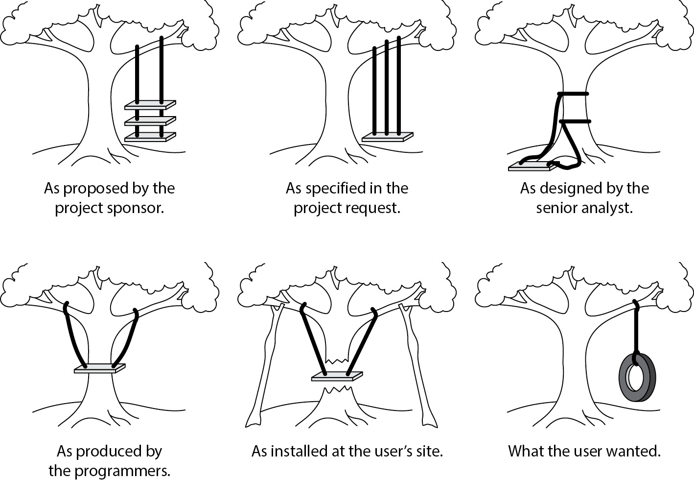
Figure 4-11 The potential consequences of failing to agree on design (Image courtesy of Oxford University Press, Inc.)
Key activities in the software design phase include
• The use of a structured software design tool or methodology that records details of data flow and processing flow from high levels to detail levels
• Generalized and detailed database design at the logical and physical levels
• Storyboards showing user interaction with the application
• Details on reports that can be generated by the application
The application design effort should also include the development of test plans that will be used during the development and test phases of the project. Test plans need to be developed no later than the design phase, because developers will need to perform unit testing during development as a way of verifying that they have coded software modules properly (and they may need to consult test plan documents for confirmation that they are developing software correctly). If test plans are not developed until the test phase, developers will have to figure out tests on their own, or they might not perform enough testing, which will result in many more defects being discovered during the formal testing phase of the project.
When design reviews have concluded that the design is complete, a “design freeze” should be instituted, whereby no further changes to any level of design will be permitted. With a design freeze in effect, both designers and users are more inclined to really think through all of the details of the design and do a better job of confirming whether the design is correct.
An organization that does not institute a design freeze will find the design changing throughout the development phase, which will result in different parts of the application conforming to different “versions” of the ever-changing design. This will result in chaos during the development and testing phases and is sure to result in many more reported defects during user acceptance testing and after implementation. Management should strongly assert a design freeze, since changing the design during the development phase will drive up development costs when developers are forced to rework code that was written in conformance to earlier versions of the design.
Development
The developers have been waiting all this time, and finally they can have their fun. Developers take the detailed design documents that were developed in the design phase and begin building the application. The activities in the development phase include
• Coding the application Using tools selected for the project, developers will build the application code. Newer development tools may include design elements, code generators, debuggers, or testing tools that will make developers more productive.
• Developing program- and system-level documents During development, developers document technical details such as program logic, data flows, and interfaces. This aids other developers later on when modifications to the application are needed.
• Developing user procedures As they develop user interfaces, developers can write the procedure documents and help text that application users will read. In a more extensive, formal environment, developers may write the essential core of these documents, which will be completed by tech writers. But an even better idea may be this: end-user documentation is written by tech writers who derive procedures from requirements; then the software developers will use technical requirements and the completed end-user documentation to guide them on development of end-user software.
• Working with users As they develop the parts of the application that interface with users, developers will need to work with them to ensure that the forms, screens, and reports that they build will meet users’ needs.
Application Programming Languages An organization that is considering an application development project has to make several strategic decisions regarding the technologies and techniques that will be used to perform the development and to operate the completed application.
Among those choices is the programming language(s) that will be used to write the application. Rarely does an organization have a wide-open choice of languages; rather, its choices will be constrained by several factors, including
• Standards The organization’s preferences for specific brands of computer hardware, operating systems, and databases will limit available languages to those that are available on its chosen application platform.
• Available expertise Preferences will be further limited by available programming experience among staff or contracted developers. After the application has been developed and placed in use, the organization will need to make periodic changes; an experienced developer will be needed for that task as well.
• practicality For a given hardware and software environment, the nature of the application will make some of the available languages more desirable and others less so. For instance, an organization wants to write a professional-services invoicing application in a Unix environment where assembler, C, C++, C#, and Java are the available languages. Chances are good that assembler will be eliminated, because assembler is a poor choice for application development. Instead, C++, C#, or Java is likely to be chosen. Similarly, mobile applications on the Android platform are likely to be written in Java, and applications for iOS are likely to be written in Swift.
Another factor that will influence language selection is the availability of development and testing tools. With nearly as much scrutiny as for the application features themselves, the organization should carefully select an application development environment if it does not already have one (or if it has determined that its present capabilities are insufficient).
Requirements for a development environment must include functions that will permit developers to write software code that can meet functional requirements for the application itself. If, for example, functional requirements specify a high degree of accuracy in a way that requires a high volume of test cases, a development environment that can help to automate testing will enable developers to perform this rigorous testing more easily.
Development in a Software Acquisition Setting In a software acquisition situation where an organization is purchasing or leasing software instead of developing it in-house, development activities may still be required. In a software acquisition project, software development is often needed to facilitate several needs:
• Customizations Larger off-the-shelf applications make accommodations for customizations that must be developed. These customizations can take many forms, including application code modules, XML documents, and configurations.
• Integration with other systems Applications rarely stand alone. Instead, they accept data from various sources and, in turn, provide data to other systems. Sometimes “bridge programs” or integration gateways need to be written that serve to move and transform data from one environment to another.
• Authentication In an effort to improve security or make application adoption easier, organizations often desire that new applications use a system- or network-based authentication service. The primary advantage to this approach is that users do not need to remember yet another user ID and password. An application’s authentication can often be tied to LDAP or Microsoft Active Directory, or it can be part of a federated identity environment.
• Reports Complex applications may have a report writer module that is used to create custom reports. Depending upon the underlying technology, a developer may be needed to develop these reports. Even if a report authoring tool is intuitive and easy to use, a developer may still be needed to help users design reports.
Debugging The first and most crucial part of software testing is performed by the developers themselves during development. Debugging is the process of testing software code to make sure that it operates properly and is free of defects. The testing that a developer performs is called unit testing; this means that the individual modules (units) that developers create are tested on their own. Wider scale testing is usually performed by others later on in the development cycle.
The objectives of debugging include the following:
• Correct operations Software developers need to make sure that software modules are manipulating data and performing calculations correctly.
• Proper input validation All input fields and input records should perform detailed checks on all input data to prevent errors and tampering. Manipulation of input data is one of the principal forms of application abuse and a significant cause of security incidents.
• Proper output validation Modules must perform output validation to ensure that output data is within bounds. Output validation is one way to detect malfunctions that occur in an application module.
• Proper resource usage Modules should be tested to make sure that they utilize resources such as memory correctly. Modules should properly request and relinquish resources so that malfunctions such as memory leaks do not occur.
Source Code Management In any size development effort, whether the development team is 1 developer or 250 developers, an organization should use a source code repository tool. Such a tool has several purposes:
• Protection A source code management tool often includes access controls so that only authorized personnel are permitted to access application source code. This helps to protect the organization’s intellectual property and to prevent other persons from learning the secrets of the application’s inner workings or performing unauthorized changes to source code, either of which could lead to fraud or misuse of the application later on.
• Control A source code management system utilizes “check out” and “check in” functions so that only one developer at a time may work on a specific part of the application. This helps to ensure the integrity of the application’s source code.
• Version control A source code management system tracks each version of the code as it is checked in by developers. The system tracks the changes made from version to version and can show the differences in code between versions, and it also permit the reversion to an older version if application problems arise later on.
• Recordkeeping A source code management system maintains records related to check-outs, check-ins, and modifications to source code. This makes it possible for management to know what changes are being made to source code and who is making those changes.
Organizations that outsource some of their software development to third parties need to determine the business rules regarding those outsiders’ access to source code. Some portions of a software application may be considered intellectual property or may constitute trade secrets. Further, there may be sections that are security-related. In such cases, organizations should consider enacting and enforcing business rules that restrict outsourced developer access to these more sensitive portions of code.
Testing
During the requirements, design, and even development phases of a software project, various project team members develop specific facts and behavioral characteristics about the application. Each of those characteristics must be verified before the application is approved for production use. This concept is depicted in a V-model in Figure 4-12. The V-model is sometimes used to depict the increasing levels of detail and complexity in the SDLC.

Figure 4-12 Requirements and design characteristics must all be verified through testing.
The stages of testing in a software development project are unit testing, system testing, functional testing, and user acceptance testing. Each stage is addressed in turn following a brief overview of test plans.
Test Plans Before testing can take place, it is first necessary to create test plans. Testing, at the overall project level and at the detail level, should be a methodical and repeatable process, not subject to the skills and experience of any individuals who are performing tests.
To a great extent, test plans are going to be derived directly from requirements that were developed prior to development taking place. There may, however, be other sources or types of testing that may not be explicitly stated in requirements, including
• Adequacy of business use cases
• Resistance against misuse and abuse cases
• The degree to which a program’s operation and functions are self-evident to the user
Because of the volume and/or complexity of test cases, it may be necessary to create test plans. Test plans may be developed for several reasons, including
• Volume of tests need to be distributed to several individuals in some logical manner
• Testing performed by one or more outside parties or organizations
• Tests allocated based on the availability of individual testers or test teams
• Tests allocated based on the knowledge or skills of individual testers or test teams
• Tests allocated based on the tools required to perform testing (for example, workload testing or security defect testing)
Unit Testing Unit testing is usually performed by developers during the coding phase of the software development project. When each developer is assigned the task of building a section of an application, the specifications that are given to the developer should include test plans or test cases that the developer will use to verify that the code works properly. This is true regardless of whether the part of the application that the developer is working on will be seen and used by end users or will be buried deep within the bowels of the application and never seen by anyone.
In a formal development environment, the unit test plans should be precise and list each test that the developer should undertake. The developer then performs each of the tests and records the results (usually the actual output) of the test. Those test results are then archived so that they can be referred to later if needed.
The archiving of unit testing records sometimes proves valuable when later phases of testing are taking place and some problem is found. Developers trying to isolate the cause of later testing problems can refer back to test plans and results at the unit testing phase to see whether the test plans and other unit testing activities were performed correctly, or whether they contained appropriate test cases. This evidence can save the project team a lot of time by eliminating the need to repeat unit testing.
Unit testing should be a part of the development of each module in the application. When a developer is assigned a programming task in a software development project, unit testing should be performed immediately after coding and debugging have taken place. In some organizations, developers work in pairs—the senior developer writes code, and the junior developer performs testing. This gives junior programmers an opportunity to learn more about advanced programming by observing the senior developer and by testing his or her code.
System Testing As various parts of the application are developed and unit-tested, they will be installed into a test environment. When a sufficient number of modules or components has been completed, it will eventually become possible to begin end-to-end (or at least partial end-to-end) testing. In this way, it will be possible to test several components as a whole to verify whether they work together properly.
System testing includes interface testing to confirm that the application is communicating properly with other applications. This will include real-time interfaces as well as batch processing.
System testing also includes migration testing. When one application is replacing another, data from the old application is often imported into the new application to eliminate the need for both old and new applications to function at the same time. Migration testing ensures that data is being properly formatted and imported into the new application. This testing is often performed several times in advance of the real, live migration at cutover time.
As with unit testing, system testing should have pre-prepared test plans that were developed at the system design phase. And as with unit testing, system testing should probably not be performed by the developers who developed the modules under test or by the integrators who set them up in the test environment. Further, system testing results should be formally documented and archived in case they are needed later.
Functional Testing Functional testing is primarily concerned with the verification of functional requirements that were developed earlier in the application project.
Each functional requirement must be expressed in a way that makes it inherently verifiable. When each functional requirement is developed, one or more tests should also be developed, which are conducted during the functional testing phase of the project.
Functional tests should be formally recorded, including test input and test results. All of this should be archived in case it’s needed if the application is suspected of malfunctioning. Often functional test results can verify whether the malfunction was present during the functional testing before the application went live.
User Acceptance Testing Before business users will formally approve and begin using a new (or updated) application, often a formal phase called user acceptance testing (UAT) is performed. UAT should consist of a formal, written body of specific tests that permits application users to determine whether the application will operate properly.
The detailed output of user acceptance testing should be archived, as it may be needed in the future.
UAT is often a stage in the acceptance of leased or purchased software, as well as in software that is developed by a third-party organization. User acceptance testing is the formal test that determines whether the customer organization will accept (and pay for, as the case may be) the application and begin formal use of it.
Quality Assurance Testing Quality assurance testing (QAT) is a formal verification of system specifications and technologies. Users are usually not involved in QAT; instead, this testing is typically performed by IT or IS departments.
Like UAT, QAT should be a “gatekeeper” test in any situation where the organization is purchasing off-the-shelf software or the application software is being developed by an external organization. The results of QAT should also determine whether the organization will formally accept and pay for the application.
Implementation
Implementation is the phase of the project in which the completed application software is placed into the production environment and started.
Implementation must be started before UAT and QAT begin. UAT and QAT should be performed on the production environment that is anticipated to become the in-use production environment once approvals to use the application are obtained.
From the very day that construction of the implementation environment begins, that environment should be as controlled as a production environment. This means that all changes to the environment should go through a change management process. Also, administrative access to the production environment should be restricted to those personnel who will be supporting the environment after it goes live. The implementation timeline, in relation to other phases of the software development project, is depicted in Figure 4-13.
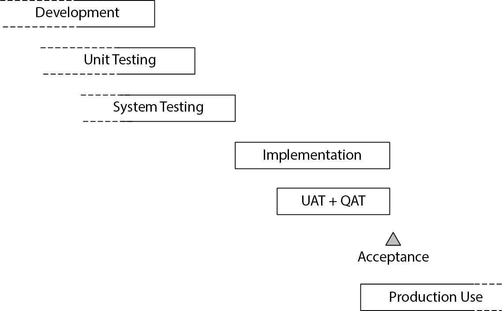
Figure 4-13 Implementation involves preparing the production environment prior to UAT and QAT.
Implementation Planning Implementation is a complicated undertaking that requires advance planning. Some activities may have a long lead time associated with them, requiring some implementation activities to begin during development or earlier.
• Prepare physical space for on-premises production systems. For organizations implementing an application on physical servers, an existing data center may be used for an application’s servers and other equipment. But if there isn’t room, or if an existing data center’s available space is insufficient, the organization may need to consider expanding an existing data center or consider a collocation center.
• Build production systems. The actual servers that the application will use must be built and configured. If the organization does not have the necessary servers available, the hardware systems must be leased or purchased; depending upon the type of hardware, considerable lead time may be required. If the public cloud will be used, the organization needs to select a public cloud vendor (this should be done at design time, or earlier!) and implement server operating systems there. Once the hardware or virtualization platform is available, personnel will need to install and configure operating systems and possibly other subsystems such as database management systems or application management systems. Supporting infrastructure such as routers, switches, firewalls, and so forth must also be implemented at this time.
• Prepare virtual machines for cloud-based production systems. For an organization deploying its application in an Infrastructure-as-a-Service (IaaS; discussed later in the chapter), virtual machines need to be acquired and configured.
• Install application software. Once the systems are ready for the application software, it can be installed and configured.
• Migrate the data. For environments in which an existing application will be retired, data from the former environment usually needs to be transferred to the new environment. Often this procedure requires the development of one or more custom programs to extract, convert, and insert the data into the new environment. This procedure is usually performed more than once: it must be rehearsed at least one time to make sure that it works properly. Also, migrated data is often needed for functional testing, UAT, and training before the actual cutover.
Training The success of the entire software development project hinges on the knowledge and skills of several different people in the organization. The following are among those who may need training:
• End users Personnel who will be using the application need to be trained so that they will know how to operate it properly.
• Customers If outside customers will be using the new application, they will need an appropriate amount of information so that they will understand how to use it. In other cases, customers will not be using the application directly, but a new application can still influence how they interact with the organization. If customer service or sales personnel are using a new application for taking orders or for looking up customer data, they may be asking different questions or presenting different information to the customer.
• Support staff Personnel who provide customer service to users and customers need to be trained in the workings of the application, as well as on administrative “back office” tools that they may use to assist users.
• Trainers Organizations that employ a training organization will need to “train the trainers” so that, in turn, they will be able to train users and customers correctly.
The purpose of an application may require that others also receive training. This could include internal or external auditors, or regulators who have oversight over the organization.
Data Migration In the context of the SDLC, the purpose of a data migration is to transfer data from an older, soon-to-be-retired system to a new system. Depending upon the nature of the old and new applications, the purpose of the data migration may be to make historical records that originated in the older system available in the newer system.
In some cases, an organization will continue to keep the older application running to facilitate access to historical data. In some circumstances, it may require fewer resources to keep the old application running than to migrate the historical data to the new application.
Data migration often requires the development of programs that extract data from the old application, perform required transformations, and then format the data and import it into the new application. This is frequently a complex task, as there may be differences so significant between the data models of the old and new applications that the meaning of stored data differs between them. In some cases, it will be necessary to create some parts of the database in the new application by extracting data from the old application and then performing calculations to create the data necessary in the new. Careful analysis is required in all cases to make sure that the meaning of data in each application is known so that the migration will be done properly. Following are some techniques and considerations that ensure a successful migration:
• Record counts Programs or utilities should be used to count the number of records in counterpart tables in the old and new environments. This will confirm the completeness of the migration programs that move data from the old environment to the new one.
• Batch totals Data records with numeric values can be added together in the old and new databases. This will help to confirm the integrity of key data elements in the old and new environments.
• Checksums Programs that compute checksums can be run against old and new databases to ensure the accuracy of migrated data. Programmers do need to be aware of the methods used to store data, which could lead to differences in checksums. For instance, an address field in one application may pad the field with spaces, but in the other it may be padded with nulls. Also, the way that dates are stored can vary between applications. While using checksums can be valuable, programmers and analysts must be familiar with any differences in data representation between the old and new environments.
Cutover When the production system has been constructed, applications loaded, data migrated, and all testing performed and verified, the project team has reached the cutover milestone. Often, management review and approval are required to verify that all necessary steps have been completed correctly.
Depending upon the nature of the application as well as external influences such as regulation or business requirements, an organization may transfer processing to the new environment in one of several ways:
• Parallel cutover The organization may operate both the old and new applications in parallel for a time, making careful comparisons between old and new to ensure that the new application is working properly.
• Geographic cutover In an application used throughout large geographic regions, such as a retail point-of-sale application, the organization may migrate individual locations to the new application instead of moving all locations at one time.
• Module-by-module cutover The organization may migrate different parts of the application at different times. In a financial management application, for instance, the organization could move accounts receivable to the new environment, later move accounts payable, and still later move general ledger. During and between each of these phases, the organization must keep track of exactly which business information resides in which system.
• All-at-once cutover An organization may elect to migrate the entire environment at one time.
The project team must analyze all available methods for a cutover and choose the method that will balance risk, efficiency, and cost-effectiveness.
Analysts may discover problems in data in the old environment that necessitate a cleanup be performed prior to the migration or as a part of the migration. Examples of the types of problems that can be found include duplicate records, incomplete records, or records that contain values that violate one or more business rules. Analysts who discover data inconsistencies such as these need to alert the project team to the matter and then help the project team decide how to remedy the situation.
Rollback Planning Sometimes an organization will migrate an application from an old environment to a new one, and shortly afterward will discover a serious problem in the new environment that requires a return to the old environment. Rollback planning is a safety net that provides a last-resort path away from a situation where the organization cannot continue using the new environment.
A rollback is a serious undertaking and would be considered only when there is a problem in the new environment that is so serious that it cannot be easily remedied. However, rollback planning is recommended in environments where the availability and integrity of an application is critical to the organization, even if a rollback is never needed.
Post-Implementation
The software project is not completed when the application cutover has taken place. Several activities still must take place before the project is closed. This section describes these final tasks.
Post-Implementation Review After the implementation of a new application, one or more formal reviews need to take place. The purpose of these reviews is to collect all known open issues and to identify and discuss the performance of the project. Because the organization is likely to undertake similar projects in the future, it is a valuable use of time to identify what parts of the project went well and what could have been done better. The implementation review should consider
• System adequacy The project team should work with the users of the new system and collect issues and comments, which are then discussed in the implementation review. Any issues requiring further attention should be identified.
• Security review The system’s access controls and other security controls should be discussed and any issues or problems identified.
• Privacy review The system’s privacy features and controls need to be discussed and any problems identified.
• Audit review The system’s ability to be audited, as well as any early audit results, need to be discussed.
• Issues All known problems regarding the new environment should be identified. This should include user feedback, operations feedback, and the accuracy and completeness of documentation and records. The project team needs to discuss each issue and assign it to one or more individuals who will address and remedy it.
• Return on investment If the purpose for implementing the application was to establish or improve return on investment (ROI) or efficiency, then initial measurements need to be taken. The project team needs to recognize that several business cycles may be required before an accurate ROI can be determined.
More than one post-implementation review may be needed. To hold a single post-implementation review shortly after going live and then calling it good is probably inadequate for most organizations. Instead, a series of reviews may be needed, perhaps stretching over years.
Software Maintenance Immediately after implementation, the application enters the maintenance phase. From this point forward, all changes to the environment must be performed under formal processes, including incident management, problem management, defect management, vulnerability management, change management, and configuration management. All of these processes should have been developed and modified as necessary to accommodate the new application when cutover was completed.
Software Development Risks
Software development is not a risk-free endeavor. Even when management provides adequate resources for a software development project and supports a viable methodology, there are still many more paths to failure than to success.
Some of the specific risks that are associated with software development projects include
• Application inadequacy The application may fail to support all business requirements. During the requirements and specifications phases of a software development project, some business requirements may have been overlooked, disregarded, misunderstood, or unappreciated. Whatever the reason, an application that falls short of meeting all business requirements may, as a result, be underutilized or even abandoned.
• Security and privacy defects The application may contain security or privacy defects that permit various forms of misuse and abuse, including denial of service, escalation of privilege, data disclosure, and data corruption.
• Project risk If the application development (or acquisition) project is not well run, the project may exceed spending budgets, time budgets, or both. This may result in significant delays and even abandonment of the project altogether if management has considered the project a failure.
• Business inefficiency The application may fail to meet business efficiency expectations. In other words, the application itself may be difficult to use, it may be exceedingly slow, or business procedures may require additional manual work to meet business needs. This can result in critical business tasks taking too long or requiring additional resources to complete.
• Market changes Between the time that a software development project is approved and when it is completed, sudden or unexpected changes in market conditions can spell disaster for the project. For instance, drastic supply or price shocks in a macro environment can have an adverse effect on costs that may make a new business activity no longer viable. Changes in the market can also result in reduced margins on products and services, which can turn the ROI of a project upside-down.
Alternative Software Development Approaches and Techniques
For decades, the waterfall approach to software development was the de facto model used by most organizations. Breakthroughs and changes in technology in the 1970s and 1980s have led to new approaches in software development that can be every bit as effective as the waterfall model and, in many cases, more efficient and faster.
DevOps
DevOps is the growing movement that utilizes agile development methodology coupled with tighter integration of development teams, software QA, and IT operations. DevOps isn’t complete without tools facilitating more effective (often automated) testing.
In DevOps, the lines between software development, QA, and IT operations are somewhat blurred. It is essential for organizations to ensure that access control models and capabilities continue to support regulatory and compliance requirements such as
• Data segregation Developers should never have access to production data.
• Separation of duties Critical processes such as change control still require administrative and technical controls so that no one person (such as a developer) can make unauthorized changes in production environments.
The relationship between development, software QA, and IT operations is depicted in Figure 4-14.
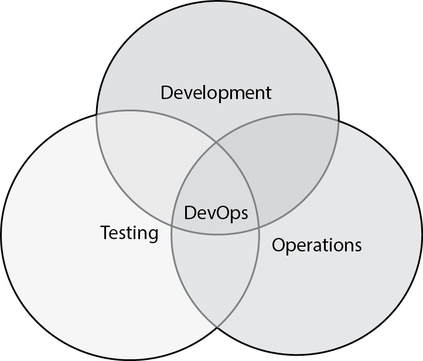
Figure 4-14 DevOps is the integration of development, software QA (testing), and IT operations.
DevSecOps
DevSecOps is an offshoot of (some would say an improvement to) DevOps. DevSecOps represents the best of DevOps and includes security design and testing capabilities that are a part of the rapid development and automated testing process. Often, static and/or dynamic code-scanning capabilities are integrated into the software build environment so that security defects are identified as soon as possible. Further automated testing can be performed on production environments to reveal exploitable defects that can be remediated by developers in subsequent sprints.
Agile Development
Agile development is a software development model and is referred to as an alternate methodology that is appropriate for some organizations. The agile methodology utilizes the Scrum project methodology that is discussed in detail earlier in this chapter. In an agile development project, a larger development team is broken up into smaller teams of five to nine developers and a leader, and the project deliverables are broken up into smaller pieces that can each be attained in just a few weeks.
Prototyping
Application prototyping is a methodology whereby rapidly developed application prototypes are developed with user input and continuous involvement. In this method, users work closely with developers who build specific components in short periods and solicit frequent user feedback.
The primary advantage of prototyping is that the risks of the application turning out all wrong are reduced because users are constantly involved and can head off an incorrect approach before more time is wasted.
The main disadvantage of prototyping is that the system is developed based only on what the user sees and knows; other functional requirements that users may be unaware of may go unaddressed, resulting in a system with inadequate controls and resilience.
Rapid Application Development
Rapid application development (RAD) is a response to the slower and more structured application development methodologies (such as waterfall) that were developed in the 1970s. RAD is characterized by the following activities and features:
• Small development teams consisting of highly experienced developers and analysts
• The development of prototypes
• Development tools that integrate data design, data flow, user interface, and prototyping
• A central repository for software components with an emphasis on code reusability
• Design and prototype analysis sessions with end users
• Tight time frames
RAD can almost be thought of as a 1960s-era protest of the political and business establishment. In most cases, it takes the opposite approach to software development from the then-traditional and time-proven (but also inefficient and time-consuming) development models created in the decades before.
Data-Oriented System Development
Data-oriented system development (DOSD) is, as the name suggests, a data-centric software development methodology. In DOSD, data is the central focus, the “hub of the wheel” as it were, and the other development activities occur as a result of data analysis and design.
DOSD is utilized in some of the larger information processing environments that are interconnected by many organizations. For instance, airline reservations systems, merchant and payment processing systems, securities trading systems, medical records processing systems, and cloud-based Platform-as-a-Service (PaaS) vendors such as SalesForce.com and Concur all have well-defined data models and transaction interfaces. Organizations that want to participate in these larger systems will build their own applications that are focused on the published data interfaces on the systems they want to connect to.
DOSD can be applied to environments that utilize batches of transactions that are, for example, transmitted and processed in bulk, as well as transactions that are performed in real time, such as airline reservations or securities trading.
Object-Oriented System Development
Object-oriented (OO) system development is a world unto itself that contains an entire vocabulary to describe objects and many other software components. It is so different from traditional structured programming (such as FORTRAN, BASIC, and C) that it has its own languages and even databases if you want to implement one.
Entire books (and even series of books) have been written on OO development and technology. I will summarize the basic vocabulary and activities here.
The basic unit of OO technology is the class. A class describes the characteristics of an object, including its attributes, properties, fields, and the methods it can perform.
The instantiation of a class is called an object. You could think of a class as stored code and configuration, and when it’s running, the part that is running is the object.
A method refers to the actions that an object can perform. If, for instance, an object is written to calculate the interest on a loan, the method is the software code in the object that performs the calculation. In other programming languages, subroutines and functions are basically the same thing as a method in OO.
Objects routinely employ another technique known as encapsulation. This is a common practice whereby any particular method may call other methods to perform its work. This is similar to a function calling another function. The point of encapsulation in OO is that the software developer does not need to know anything about the implementation details of a method, including whether it calls other methods.
At the beginning of this narrative I mentioned a class. OO frequently has a hierarchy of classes. A class can belong to a parent class, and in turn, a class can contain subclasses. But parent classes and subclasses are not just ways of arranging or storing classes. Instead, the relationship of classes is functional. The attributes of a parent class are passed down through inheritance.
Earlier I stated that when a class is instantiated, it becomes an object. Depending on the data that is passed on to the object, it may behave in different ways. This characteristic is known as polymorphism. For example, a class that computes shipping charges will behave in different ways, depending upon the source and destination addresses as well as on special circumstances such as customers. In this case, polymorphism is not just about the rate that is chosen for shipping, but possibly other objects will be called, such as objects to handle customs, taxes, or hazardous materials declarations.
OO programming and operational environments will have one or more class libraries. These take many forms, depending upon the operating system, languages, and subsystems that are in use. For instance, in the Java language, class libraries are stored in JAR (Java ARchive) files that are located on the system where programs can refer to them when needed.
Component-Based Development
Component-based development is an approach that reflects the software architecture of an application. Here, an application environment will be made up of several independent components, often located on different physical or virtual systems, which work together.
For example, a large application environment may consist of a group of centrally located servers that process primary transactions. These servers may contain interfaces, using standard interface technologies such as CORBA (Common Object Request Broker Architecture), RPC (Remote Procedure Call), or SOA (Service-Oriented Architecture), with which other parts of the overall application environment may communicate. For instance, auxiliary components such as batch input and output, data warehouses, static table updates (such as tax or shipping rates), and client programs may all be independent applications that communicate with the core system.
Web-Based Application Development
The creation of the HTML content-display standard and the HTTP communications protocol has revolutionized application development. The web browser is ubiquitous and has become the universal client platform that is not unlike an intelligent display terminal from earlier eras.
The Web, as it is popularized now, came along just in time: two-tier and three-tier client-server computing, the great new application development paradigm that was developed in the 1990s, was not living up to its promise, particularly in the areas of performance and upkeep of client software. Web software has dramatically simplified software development from the perspective of the user interface (UI); though the developer has a little less control over what and how data will be displayed on a user workstation, the trade-off in not having to maintain client-side software is viewed as acceptable.
From a development methodology perspective, web application development can be performed within virtually all of the development frameworks, including waterfall, DevOps, agile, RAD, DOSD, and OO (all discussed in this chapter). Primarily it’s the target technology that differentiates web-based application development from its alternatives.
Important standards have been developed that facilitate communications between web-based applications, including JSON-RPC, SOAP (Simple Object Access Protocol), and Web Services Description Language (WSDL). JSON-RPC is an XML (eXtensible Markup Language)–based protocol coded in JavaScript Object Notation (JSON) used by a client system to request a method of a remote system.
SOAP is an XML-based application programming interface (API) specification that facilitates real-time communications between applications using the HTTP and HTTPS protocols. Functionally, SOAP operates similarly to RPC, wherein one application transmits a query to another application, and the other application responds with a query result. SOAP messages are based in the XML standard.
WSDL serves as a specification repository for the SOAP services available in a particular environment. This permits an application to discover what services are available on an application server.
Reverse Engineering
Reverse engineering is the process of analyzing a system to see how it functions, usually as a means for developing a similar system or for learning about how the system works. Reverse engineering usually requires tools that examine computer binary code and that build a programming language equivalent.
Reverse engineering can help to speed up a development project where an organization needs to build an application that is similar to another in its possession that exists in binary format only. Without reverse engineering, the organization would have to spend additional time in the software design and development phases of the project.
This practice is usually forbidden in software license agreements, because using it would reveal protected intellectual property that could economically damage the original software maker.
System Development Tools
Application developers can create source code using tools ranging from simple text editors to advanced tools such as computer-aided software engineering and fourth-generation languages (4GLs). While there’s little reason to discuss text editors such as vi, Notepad, or Emacs, advanced development tools are worth your attention and are discussed in this section.
Integrated Development Environment
Integrated development environments (IDEs) are a class of desktop software development tools that incorporates source code editing, source code version control, compilation, and debugging in a single tool. An IDE enables a developer to write, test, and debug code without having to switch between programs.
IDEs typically have multiple windows, or panes, that enable the software developer to view and edit code, run code and observe execution, and view the source code library. Other functions may be available as well.
Some IDEs have built-in security capabilities such as code analysis, as well as connectivity to external tools such as source code scanning tools that look for security defects.
Computer-Aided Software Engineering
Computer-aided software engineering (CASE) represents a broad variety of tools used to automate various aspects of application software development. CASE tools cover three basic realms of development:
• Upper CASE This includes activities ranging from requirements gathering to the development of data models, data flow diagrams, and interfaces.
• Middle CASE This involves the development of detailed designs, including screen layouts, report definitions, data design, and data flows.
• Lower CASE This involves the creation of program source code and data schemas.
These terms are loosely used to classify various CASE tools. Some CASE tools are strictly Upper CASE, while others include Middle CASE and/or Lower CASE, but many cover the entire range of functionality and can be used to capture specifications, create data structure and flow diagrams, define program functions, and generate source code.
CASE tools do not usually create source code that is ready for implementation and testing. Instead, they are used to create the majority (in the best cases) of code for a given program; then the developer(s) would add details and specific items that the CASE tool did not cover. CASE tools are not used to replace the work of a developer, but to help make the coding part of a development project take less time, to improve consistency, and to enhance program quality.
CASE tools often contain code generators that create the actual program source code.
Fourth-Generation Languages
Fourth-generation languages, or 4GLs, comprise a variety of tools that are used in the development of applications or that are parts of the applications themselves.
There is no universally accepted definition for 4GLs, unlike with first-, second-, and third-generation languages. 4GLs were developed independently by many different organizations and researchers, and they carry a diversity of concepts that contributes to the inability to describe all of them in a single definition. Common among nearly all of the 4GLs and tools is that they are event-driven rather than procedure-driven, and they are less detailed than procedural languages.
4GLs are most often used as adjuncts to applications rather than for their core functionality. For instance, 4GLs are useful for report generators, query generators, and other higher level functions. 4GLs are typically designed for use by nontechnical users who have few or no programming skills. 4GLs can also be used by developers as code generators.
Acquiring Cloud-Based Infrastructure and Applications
Organizations often choose to acquire a business application that is hosted in a cloud or SaaS environment, as opposed to hosting the application on their own systems. This section discusses issues that organizations should understand when considering this option.
The common options available for cloud-based application environments are
• Software-as-a-Service An application service provider is hosting its application software on its own infrastructure, often located in a data center and used by several customers. Users access the application in much the same way that they would if the application were hosted within the organization’s own IT environment.
• Infrastructure-as-a-Service A cloud service provider is providing an environment in which its customers build and operate virtual machines. While the client organization is relieved of the burden of purchasing network, system, and storage hardware, it still needs to create a network architecture, security architecture, systems architecture, and application architecture, and it must install and manage operating systems, virtual network devices such as switches and routers, and virtual security tools such as firewalls, intrusion prevention systems, and data loss prevention systems.
• Platform-as-a-Service A cloud service provider is providing an application-based or data-based platform on which customers can develop and/or integrate their applications. PaaS services are typically organized around a business theme—for example, Salesforce.com for sales enablement or Concur.com for expense and travel management.
Regardless of the cloud model that is chosen, the organization needs to understand many details that are related to the manner in which the cloud provider provides its services to the organization. Some of these details are
• Access control The cloud service provider must have an effective access control plan to ensure that only authorized personnel have access to infrastructure components and virtual machines. Often, the organization using cloud services will manage access control in upper layers (such as in operating systems, database management systems, and applications that it may install and maintain on cloud servers), while the cloud provider will manage access control in lower levels (such as in virtual machine hypervisors and via physical access).
• Environment segregation The cloud service provider must effectively separate systems and data between customers so that no cloud customer is able to access systems and data of other customers.
• Physical security The cloud services provider must provide adequate physical security so that only authorized personnel will have physical access to all cloud environment infrastructure and facilities.
• Regulation The cloud service provider must provide controls that will meet all applicable regulatory needs for its customers.
• Privacy The cloud service provider (and, indeed, the organization using cloud services) must implement safeguards to ensure appropriate protection and handling of personally identifiable information (PII) stored in cloud environments.
• Legal jurisdiction The cloud service provider and its customers must have a firm understanding regarding the physical location of stored data, relative to the location of the owner(s) of that data. This will enable legal counsel to understand the applicability of security and privacy laws governing the use of stored data. This is particularly important in the context of data privacy and data sovereignty laws.
• Availability The cloud services provider must deliver availability of services to customers at a level to meet customers’ expectations. This applies not only to the steady availability of services, but also to on-demand availability.
• Audit Many standards, regulations, and legal agreements require some level of auditing of systems, applications, and their supporting controls. The cloud environment must be verifiable in this regard.
Figure 4-15 shows a typical cloud responsibility model that illustrates which party is responsible for implementing and operating which aspects of security in a cloud environment.
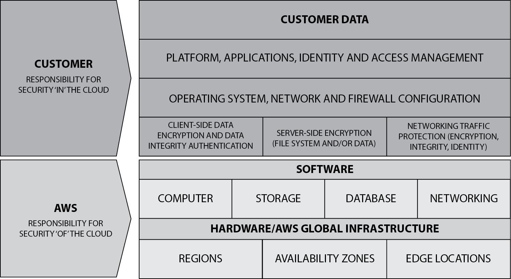
Figure 4-15 Typical cloud responsibility model (Image source: Amazon Web Services)
Infrastructure Development and Implementation
Infrastructure is used to connect applications to users and to other applications. Infrastructure is composed of the networks, servers, storage systems, and other facilities that support the use of applications.
While an organization may be able to acquire off-the-shelf or SaaS software for many of its core business activities, infrastructure is almost always custom-architected and integrated for the organization. Whereas software applications are like the tools in the hand of an astronaut, the infrastructure is like the astronaut’s glove, which must be tailor-made to fit each astronaut’s hand. Infrastructure needs to conform to the organization’s geography, business model, security requirements, regulatory requirements, and culture.
Formal processes are required to design and develop infrastructure that is sure to meet the organization’s needs. This section describes the detailed process of the infrastructure development life cycle that is needed to ensure that the infrastructure will adequately support the use of applications and other IT facilities and tools.
In the context of business applications and information systems, infrastructure is the collection of networks, network services, devices, facilities, and system software that facilitate access to, communications with, and protection of those business applications. For instance, a user who wants to access a business application uses a workstation that is connected to a local area network (LAN). To access the business application, the workstation communicates over networks formed with routers, switches, firewalls, and cabling. All of that “in-between” equipment and cabling constitutes infrastructure.
Infrastructure facilitates the communication and use of applications. Without infrastructure, applications cannot function or be accessed by users. Since infrastructure is so vital, its construction and maintenance requires the same level of formality and process as the business applications that it supports. In newer organizations, however, infrastructure serves only to connect workstations to the Internet and to facilitate a few business location services such as document scanning and printing.
Review of Existing Architecture
When an organization is considering an architecture change or an upgrade to some component or aspect of its infrastructure, it must first review what infrastructure already exists and how its components relate to one another. Changes or additions to infrastructure will be most effective when existing infrastructure is carefully analyzed. This permits the organization to make necessary additions and changes that will be most effective and at the lowest possible cost. Characteristics of existing architecture that need to be considered include
• Physical security, size, weight, and power requirements for on-premises environments
• Compatibility with virtualization platforms for cloud-based environments
• Compatibility with existing infrastructure and infrastructure that will be acquired in the future
• Operations and support
• Security architecture and operations
Requirements
The next step in any addition or upgrade of infrastructure is the development of requirements. As with the SDLC, it is essential to know precisely what is expected of the infrastructure in terms of specific features and capabilities. An analyst or project team should develop specific requirements in a number of categories:
• Business functional requirements These specify what the addition or change to the infrastructure is expected to do. For instance, networks or network services will be expected to support new or improved communications between users and applications, remote access, communications to service providers, or services between applications. Or segmentation may be planned to isolate a cardholder environment from the rest of the environment.
• Technical requirements and standards These specify which technologies and standards must be followed for the new infrastructure. Additions or changes to infrastructure should support existing protocol and services standards such as TCP/IP, LDAP (used for authentication and authorization), product standards for devices such as routers and switches, and other standards that will permit the new infrastructure to work harmoniously with existing infrastructure with the smallest possible increases in support costs. Technical requirements for infrastructure should also include performance requirements such as availability, latency, and throughput so that the infrastructure will have the capacity to support all needed business functions.
• Interoperability These requirements ensure that additions or upgrades will work in harmony with existing components and systems in an organization’s environment.
• Security and regulatory requirements These requirements specify how information is protected from unauthorized third parties. Examples include firewalls to limit access, intrusion detection systems to create alerts of possible tampering, and encryption to protect information from eavesdropping and interception.
• Privacy requirements These requirements specify how information is protected and handled to limit the use of personal information to officially sanctioned purposes.
Design
Additions and changes to existing infrastructure (or even to brand-new infrastructure) must be designed, and that design must be validated by subject matter experts. An infrastructure design may also include the use of specific protocols or services for authentication, routing, encryption, device management, and administrative support. When an environment is being expanded or upgraded, generally the new components will need to work with the same support and management methods that are used for existing infrastructure, except when the infrastructure change has to do with a change in these features.
The design should be detailed enough so that a network or systems engineer can determine the logical and physical components that are needed and can configure them to support business needs. If software or hardware vendors will be asked to make suggestions on the components required for the infrastructure, then the design must be detailed enough so that they can make appropriate recommendations that will meet business needs.
Procurement
More often than not, additions or changes to infrastructure involve the procurement of infrastructure hardware and/or software.
Request for Proposals
Any significant expansion or upgrade to infrastructure may require the use of a request for proposals (RFP). This is a formal process whereby the organization gathers all business and technical requirements and forwards them to several qualified vendors, who produce formal written proposals that include detailed information on the equipment and services required to perform the upgrade. Some organizations require the RFP process to be used for any purchases that exceed a set amount.
When the project team receives RFP responses, the responses must be evaluated to determine which vendors are capable of meeting the organization’s business and technical needs. The project team may also need to evaluate one or more of the vendors’ solutions to “see for themselves” whether each vendor’s proposed solution will successfully meet the organization’s needs.
The request for information (RFI) process is similar to that of RFP, except that the primary request is not for business proposals, but instead for information that will help the organization select solutions.
Evaluation
If the project team will be evaluating potential solutions, the team will need to provide whatever facilities are required to house the equipment or software. The project team will also need to take whatever time is required to test the components to determine whether they can support business needs. This may require the team to provide other equipment to set up an end-to-end test.
Each of the business and technical requirements needs to be verified. This will require that one or more project team members work with the equipment being evaluated to see how that equipment works. A test checklist should be developed that has a one-to-one correspondence to each business and technical requirement. This will permit project team members to rate each feature from each vendor in an objective manner.
Testing
Before new infrastructure—or significant changes to existing infrastructure—can be made available for production users, the infrastructure should be formally and thoroughly tested. This helps to confirm that the infrastructure was built correctly and that it will be reliable and secure.
Each functional and technical requirement that was developed earlier needs to be systematically verified. This means that a detailed test plan needs to be developed that uses functional and technical requirements as a source. For instance, if a technical standard requires a specific routing protocol configuration setting, then a network engineer on the project team needs to verify whether network devices support that feature (a matter such as this should have been settled during requirements development).
Most organizations do not have a test network environment that completely mirrors their production network. This means that some of the testing needs to be creative, and some testing and verification can’t be done until implementation time. The project team will need to discuss the hard-to-test characteristics of the new infrastructure and decide the best course of action that facilitates the greatest amount of testing and the lowest risk of project failure. In other words, the results of some testing won’t be known until the new infrastructure goes live.
Tests that cannot be done until implementation will become part of the verification that implementation was performed correctly.
Implementation
When evaluation and testing are complete and all obstacles and issues have been satisfied, the new infrastructure (or changes to existing infrastructure) can be implemented. This may involve the physical installation of cabling, devices, and other components, as well as the use of common carrier facilities such as communications circuits. In an implementation, the infrastructure is all assembled, tested, and placed into production use.
Maintenance
Infrastructure requires periodic maintenance, usually in the form of software and hardware upgrades and configuration changes to accommodate changes in the business and technical environments. These changes should be controlled through change management and configuration management processes that are described in detail earlier in this chapter and in the following section.
Maintaining Information Systems
The job is only half done when an application or system has been implemented. Like any system with moving parts (whether real or virtual), information systems and the environments that support them require frequent maintenance. There are dual aspects to system maintenance: business processes and changes to technology. This is embodied in the change management and configuration management processes discussed here.
Change Management
Change management is a formal process whereby every proposed and required change to an environment must be formally requested, reviewed, and approved before it is made. The purpose of change management—which is also known as change control—is to identify and reduce risks associated with changes to an IT environment. Change management also helps to reduce unscheduled downtime in an environment. The typical components in a change management process are
• Change request The requestor describes, in structured detail, the desired change. The change request should include the business reason for the change, a procedure for making the change, who will make the change, and who will verify the change (this should be two different individuals or groups); a procedure for verifying that the change was made properly, when the change will be made, and a plan for backing out of the change if it is unsuccessful; and results from test implementations in a testing environment. The request should be distributed to all stakeholders to give them time to read and understand the change.
• Change review A quorum of stakeholders (usually called the change advisory board, or CAB) meets to discuss the requested change. The person or group proposing the change should describe the change and why it is being made, and he or she should be able to answer questions from others about the change and its impact. If the stakeholders agree that the change may proceed, the change is approved.
• Perform the change The person or team slated to perform the change does so at the agreed-upon date and time, using instructions that were agreed upon in the review phase of the change. Results from the change are recorded and archived.
• Verify the change Any necessary tests are performed to verify that the change was executed properly and that it has produced the desired result. If the change takes too long, or if the change cannot be successfully verified, the organization “backs out” of the change according to the agreed-upon procedure.
• Emergency changes When the performance of a change cannot wait until the next scheduled change review, organizations usually provide a process whereby developers or engineers are permitted to make an emergency change. Typically, some management approval is still required; personnel should never be permitted to make changes and then inform others after the fact. Emergency changes still need to be formally reviewed in a change review to ensure that all stakeholders understand what change was made to the environment. A long-term goal that should be realized from managing emergency changes is the reduction in the need to make emergency changes, but a change plan should provide enough information to enable the organization to anticipate situations and manage them proactively if they do occur.
Unauthorized Changes
Organizations need to have tools and methods in place to detect unauthorized changes that are made to systems, and to respond to those changes. Two avenues of action need to take place: first is the behavioral aspect, whereby management discusses the unauthorized changes with the person(s) who made them; second, the impact of those unauthorized changes needs to be understood and appropriate actions taken as a result.
Controls should be in place to prevent unauthorized changes from occurring. Some of these controls include
• Segregation of duties Critical activities such as application software changes should be apportioned among a group of individuals so that no single individual is able to make key changes. For instance, only developers should have access to source code and be able to make changes to a staging area. Next, only authorized personnel should be able to read changes from a staging area and place those changes into production. No single person should be able to do all of these things.
• Application code review Before checking in any change to application code, an independent review should be performed to ensure that only approved changes are being made.
• Least privilege access Only those personnel who have a need to access and make changes to a system should be able to do so. For example, developers should not be able to make changes to production systems.
• File integrity monitoring Production systems should be equipped with file integrity monitoring (FIM) software that automatically detects and reports changes to files on a system. This will help to detect changes that may have been made without formal approval.
• File activity monitoring Production systems should be equipped with file activity monitoring (FAM) software that automatically detects and reports activities on sensitive files. Generally, FAM tools are used to detect access to operating system files that are usually accessed infrequently. Such access can be an indicator of compromise or of unauthorized activity by trusted insiders.
Configuration Management
Configuration management (CM) is the combination of a business recordkeeping process and automated tool(s) where the configuration of components in an IT environment is independently recorded. This activity has many potential benefits:
• Recovery When configuration information for IT systems is stored independent of the systems themselves, CM information can be used to recover a system or device in the event of a malfunction or failure.
• Consistency Often, automated tools are used to manage systems and devices in an environment. A CM tool can help an organization drive consistency into the configuration of its systems and devices. This consistency will simplify administration, reduce mistakes, and result in less unscheduled downtime.
• Troubleshooting When unexpected behavior and unplanned outages occur, information in a CM system can help with troubleshooting the problem.
Configuration management and change management processes together can help to reduce errors by requiring approval for changes and then by recording them when they are completed.
Controlling and Recording Configuration Changes
While CM is usually considered a means for recording changes made to a system, it can also be used to control those changes. Typically, this is achieved through the use of tools that control system configuration and through system access controls that prohibit changes that circumvent those tools.
Automated tools are almost always used for CM. These tools include a configuration management database (CMDB) that serves as a repository for every component in an environment and that contains information on every configuration change made to those components. The more sophisticated CM tools also permit their operator to revert a given component to a configuration that existed at any time in the past.
Configuration Management and Change Control
While controlling and recording changes in an environment is highly valuable for some organizations, CM is not a substitute for the change management process. Instead, CM is the means by which change management–approved changes are carried out and recorded on systems. Change management is the review and approval of changes, while configuration management is used to perform and record changes.
Business Processes
Organizations that are mature in their thinking and practices will treat their business processes almost like they do their software: both are carefully designed, constructed, operated, and measured, and any changes that are made for either one should be formally considered. Ongoing processes are measured, and continuous improvement and optimization are carried out over time.
Both software and processes should be considered as structured and procedural. The primary difference between the two is that software directs the processing of information in computers, while processes (usually) direct the activities of personnel.
Organizations that understand this type of approach to processes will control their processes like they control their software: through a life cycle.
The Business Process Life Cycle and Business Process Reengineering
Like software, business processes should not be constructed on a whim, but instead should be carefully planned, designed, and constructed, with the involvement of all concerned parties in the organization. These activities are a part of the business process life cycle (BPLC).
The most important component in the business process life cycle is business process reengineering (BPR), which is the set of activities related to the process of making changes to business processes.
A process is a set of procedures that achieves some business purpose or objective. These procedures should be formally documented and usually will require recordkeeping of the activities controlled by the process. The procedures will help ensure that the activities are carried out correctly and consistently. The records produced help to document the activities that occurred as the process was carried out over and over. Depending upon the nature of the process, the records serve as tangible evidence that each activity occurred at specific dates and times, by specific personnel, using specific resources. Records also record details about activities such as money spent, products or services processed or sold, and names of customers or others. Records are also used to create statistics about the process that help management understand how well the process is performing and how it is contributing to overall business goals.
There should be a process to control the creation of new processes as well as changes to existing processes. This process is remarkably similar to the SDLC (since software and processes are similar, this should be of little surprise) and consists of the following major steps:
1. Feasibility study This effort determines the viability of a new process or a change in an existing process. The amount of rigor needed here is proportional to the impact of the new or changed process.
2. Requirements definition This formal record details the process that must be included in the new or changed process. All stakeholders should contribute to the requirements definition process and review to ensure that everyone understands the details of the process.
3. Design When requirements are completed, the process can be designed. Depending upon the nature of the process, this may include descriptions of activities performed by various personnel; the business equipment, assets, or materials used; and the specific involvement of customers, partners, and suppliers.
4. Development The details of the process are developed, using all of the requirements and design as a guide. This will include detailed procedures, templates for recordkeeping, and whatever other details are required.
5. Testing When procedures have been developed, they are then tested to ensure their accuracy and suitability. Detailed test plans need to be developed that have a one-to-one correspondence to each of the requirements developed in that earlier phase.
6. Implementation When the process has been perfected through testing, it is ready to be implemented. This means using the process in actual business operations with real equipment, people, materials, and money.
7. Monitoring The process needs to be continually monitored (primarily through its recordkeeping) so that management can manage resource allocation in support of process operations and to determine whether the process is performing against stated goals.
8. Post-implementation After the process has been implemented, one or more formal reviews need to take place to review the development process itself as well as the new (or changed) process. Depending upon the size, impact, and scope of the process, several reviews may be required, possibly over several years, to measure the effectiveness of the process and its results.
The reality in business today is that information systems and applications are used to support most business processes. This means that software development and process development often occur side by side and must be coordinated so that software applications meet the needs of the business processes that they support.
As organizations began to understand that business processes can be designed, developed, and improved like software, the term business process reengineering as a beneficial activity came into being in 1990. BPR became popular almost overnight as U.S. companies struggled to stay competitive with foreign companies that were intruding into American market spaces.
Business process management (BPM) is more often used to describe ongoing process improvement. A formal discipline of its own, BPM is a “Plan-Do-Check-Act” continuous improvement cycle described in the preceding paragraphs and illustrated in Figure 4-16.
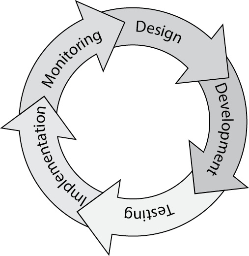
Figure 4-16 The business process management life cycle
Benchmarking a Process
Benchmarking describes the activity of continuous process improvement. The purpose of benchmarking is to compare key measurements in a business process to the same measurements performed by other organizations, particularly those that are considered to be top performers.
Typically, the steps in process benchmarking are
1. Plan A critical process is selected and measurement techniques are identified. If the process has been through at least one improvement cycle, metrics may be available; otherwise, the team will need to determine how the process is measured in terms of throughput, cost, and quality.
2. Research The team collects information about the target process over time. The team also identifies other organizations whose similar processes can be monitored and measured.
3. Measure and observe The benchmarking team collects actual measurements on other organizations’ processes. In “friendly” situations, the team will be able to visit the organizations and be permitted to collect measurements openly. In “unfriendly” situations, the team will need to make indirect measurements using whatever information is readily, legally, and ethically available. The team will also need to collect qualitative data about the processes that it is measuring in the other organizations so that it can understand how the other organizations’ processes are performed.
4. Analyze The team compares measurements of its own processes against those of the other organizations. Often the team will need to adjust measurements to account for known differences. Then the team will identify differences in metrics between its organization and those of the other organizations.
5. Adapt Here the team needs to understand the fundamental reasons why other organizations’ measurements are better than its own. The team will need to understand not only the quantitative differences, but also the qualitative differences, between its organization’s processes and the other organizations’ processes to see how the other organizations achieve their metrics.
6. Improve Finally, the team recommends process improvements in its own organization. Management makes commitments to improve its process in specific ways to help its process to become more effective and efficient.
Benchmarking is relatively straightforward when other organizations are cooperative with regard to observation and measurement. But in a competitive situation, market rivals are unlikely to cooperate, and in some situations, cooperation may even be considered illegal.
Capability Maturity Models
Capability maturity models are another way to understand the effectiveness of an organization’s business processes, particularly its software development processes. Three software development maturity models are discussed in this section.
Software Engineering Institute Capability Maturity Model
Developed at Carnegie Mellon University and now a part of ISACA, the Software Engineering Institute Capability Maturity Model (SEI CMM, often referred to as the CMM) is a conceptual model that helps an organization better understand the maturity of its own processes. This is a necessary step if an organization wants to improve its processes, particularly if the organization is not precisely sure how to begin this improvement.
The SEI CMM defines five levels of maturity:
• Level 1 – Initial This level has no process, no procedures, and no consistency. Success, when it is attained, is achieved through brute force and luck.
• Level 2 – Repeatable At this level of maturity, there is some consistency in the ways that individuals perform tasks from one time to the next, as well as some management planning and direction to ensure that tasks and projects are performed consistently.
• Level 3 – Defined The organization has developed a site-wide, documented software development process that is used for all development projects.
• Level 4 – Managed At this level, the documented software development process includes key measurement points used to measure effectiveness, efficiency, and defects. These measurements are performed and reported to management as a part of the life cycle.
• Level 5 – Optimizing At this highest level of maturity, the organization has instituted metrics-driven process improvement techniques to bring about continuous improvement in its SDLC.
Considerable effort is required for an organization to ascend from one level to the next. This model helps an organization better understand its current level of maturity and the process changes needed to improve its maturity over time.
ISO/IEC 25010, Software Engineering
International standard ISO/IEC 25010 (previously ISO/IEC 9126) is used to evaluate the quality of software. This standard classifies software quality within a set of main characteristics:
• Functionality
• Reliability
• Usability
• Efficiency
• Maintainability
• Portability
Each of these characteristics has subcharacteristics that are further divided into attributes. Each attribute is objectively measured; these measurements contribute to measured software quality results.
ISO/IEC 33001, Information Technology—Process Assessment
International standard ISO/IEC 33001 (previously ISO/IEC 15504) is a maturity model for business processes. ISO/IEC 33001 is an introduction to the ISO/IEC 330XX family of process assessment standards and how they work together.
NIST Cybersecurity Framework
The U.S. NIST Cybersecurity Framework (CSF) is a controls and management framework, together with a scheme of framework implementation tiers. The tiers are
• Partial
• Risk Informed
• Repeatable
• Adaptive
The text of the CSF claims that these tiers are not maturity levels, but upon reading the tier descriptions, it is difficult to come to any other conclusion.
Executive Order (EO) 13636, Improving Critical Infrastructure Cybersecurity, (February 2013) reads, “directed NIST to work with stakeholders to develop a voluntary framework—based on existing standards, guidelines, and practices—for reducing cyber risks to critical infrastructure” (NIST, 2018). While required for implementation within the U.S. Federal Government, the CSF is voluntary guidance for private, commercial, and other organizations. It is heavily integrated into the latest version of the Risk Management Framework (RMF) (version 2, as of December 2018), and is essentially a catalog of cybersecurity activities. These activities are outcome-based and describe desired outcomes from performing these activities. As of the writing of this book, the current version of the CSF is 1.1, released in April 2018.
The CSF consists of 5 activities or functions, further broken down into 23 categories and 108 subcategories. Each of these is also matrixed with 5 Informative References—CIS, COBIT, ISA, ISO/IEC 27001, and NIST SP 800-53—although obviously the emphasis throughout is on the NIST control catalog. All of this together is referred to as the CSF core. The mapping to CIS, COBIT, ISA, ISO 27001, and NIST 800-53 alone makes the CSF a valuable reference tool.
The five CSF functions are Identify (ID), Protect (PR), Detect (DE), Respond (RS), and Recover (RC). Each of these functions dictates how a mature cybersecurity life cycle can be developed to protect an organization and its assets. These are essentially the functions and activities an organization performs on a daily basis to protect its assets and minimize or respond to risk.
A CSF tier is “the degree to which an organization’s cybersecurity risk management practices exhibit the characteristics defined in the Framework” (NIST, 2018). The four tiers range from Partial (Tier 1) to Adaptive (Tier 4). The three areas that are measured for maturity in the CSF are the Risk Management Process (degree of rigor), the Integrated Risk Management Program (how well cybersecurity risk decisions are integrated into broader risk decisions), and the level of External Participation (the degree to which the organization shares and receives cybersecurity info from external parties).
For implementation in the private sector, the CSF can be customized into profiles. A profile is a particular customization of the CSF core for an organization or sector; it is based on the organization’s or sector’s unique requirements. NIST publishes profiles for a variety of industry sectors, such as the manufacturing and petroleum industries.
Managing Third Parties
The suppliers, vendors, service providers, and business partner organizations that assist the organization in the realization of its objectives are known as third parties. The standard of due care for the management of third parties requires that organizations carefully examine each third party during the selection process and thereafter. In response to the trend of outsourcing IT services to third-party organizations, the standard of due care has been steadily increasing. This is necessary to maintain risk parity, so that organizations have a reasonable amount of visibility into cyber-risk matters.
Risk Factors
The range and type of involvement of a third party in an organization’s development and delivery of its products or services may vary widely. This means that the risks associated with individual third parties will also vary. Accordingly, the activities that an organization will need to undertake at the onset of each third-party relationship, and periodically thereafter, will also differ.
Examples of the factors that influence risk levels include the following:
• Does the third party assist in the design, development, or operations of important information systems?
• Does the third party have access to sensitive data?
• Is sensitive data transmitted to the third party for processing?
• Do members of the third-party organization have access to the organization’s work centers?
• Are any of the activities performed by the third party in scope for laws, regulations, standards, or contracts with other parties?
The answers to these and other questions help organizations better understand various aspects of cybersecurity risk associated with each third-party organization.
Onboarding and Due Diligence
An organization typically embarks on a search of third-party service providers to find one or more candidate service providers. The organization will develop objectives and requirements and use these in an evaluation process to determine how successfully each candidate service provider will be able to assist the organization to fulfill its business objectives.
Often, organizations will conduct a formal RFP or RFI process, in which formal business and technical requirements are developed and sent to each candidate service provider. Those service providers will then respond to each requirement. The RFP process is described in more detail earlier in this chapter.
After vetting candidate service providers and making a final selection, the organization should determine the level and type of up-front and periodic (typically quarterly or annual) due diligence that will take place. These activities should be described in legal agreements between the organization and the chosen third party.
Classification
Organizations with more than just a few third-party service providers should establish a risk tiering scheme to separate the third parties into similar risk groups. The purpose of this tiering is to serve as a part of a larger program of third-party risk management whereby the organization will determine various types of due diligence for third parties at each risk level. An example tiering scheme is depicted in Table 4-3. This is a simplistic example; organizations need to develop their own criteria to determine the number and type of risk levels and rules to select a risk tier for each third party.
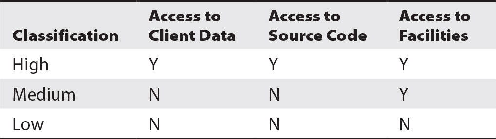
Table 4-3 Third-Party Risk Tiers
Assessment
All third parties need to be periodically assessed, but not all assessments are the same. After risk tiering is used to determine the risk level for each third party, the activities to assess each third party are established. These activities correspond to risk levels; a simplistic example scheme of risk levels and assessments is shown in Table 4-4.
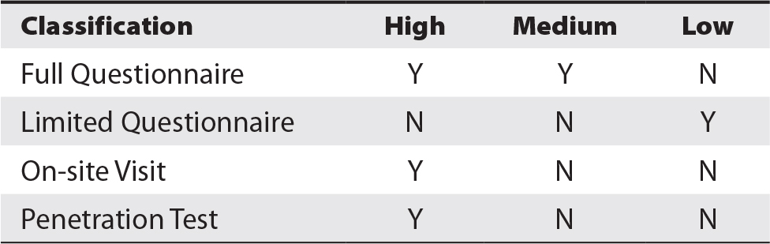
Table 4-4 Assessment Techniques for Each Level of Risk
Remediation
Organizations should expect that the initial and ongoing processes of conducting due diligence on its third-party service providers are not going to proceed perfectly. Occasionally, an organization will discover that the third party is not performing all of the required or desired activities to its liking. At times, these deficiencies may put the organization in jeopardy with regulators.
For example, an organization may require its top-tier service providers to use two-factor authentication for all remote access; an organization may, through the use of questionnaires or a site visit, discover that the third party is not using two-factor authentication for remote access. The organization may consider this a serious deficiency and must decide a course of action. Remediation can range from cessation of the relationship to acceptance of the risk. Neither of these is reasonable, but instead the organization generally will seek some middle ground whereby it will compel the third party to enact two-factor authentication for remote access within a reasonable period of time.
In situations where the third party is unable or unwilling to remediate a deficiency, the organization will need to consider its options carefully and find a path of action that brings together the right level of risk and continued business.
Risk Reporting
As personnel periodically assess third parties, a bigger picture can begin to form. Often, metrics or a risk dashboard are presented to senior management, so that management can understand where the risk “hot spots” are, as well as trends in third-party risk. This information helps management decide how to manage this important aspect of cybersecurity risk over time.
Application Controls
Software applications accept, process, store, and transmit information. Unless specifically programmed and configured, software applications lack the ability to properly distinguish valid and reasonable data from that which is not. Controls are necessary to ensure that information at each stage of processing retains its required integrity.
While there are marked differences in the architecture of software applications, the typical approach to controls is to apply these controls at the point of entry, processing, and exit. In other words, controls around input data, processing, and output data are needed.